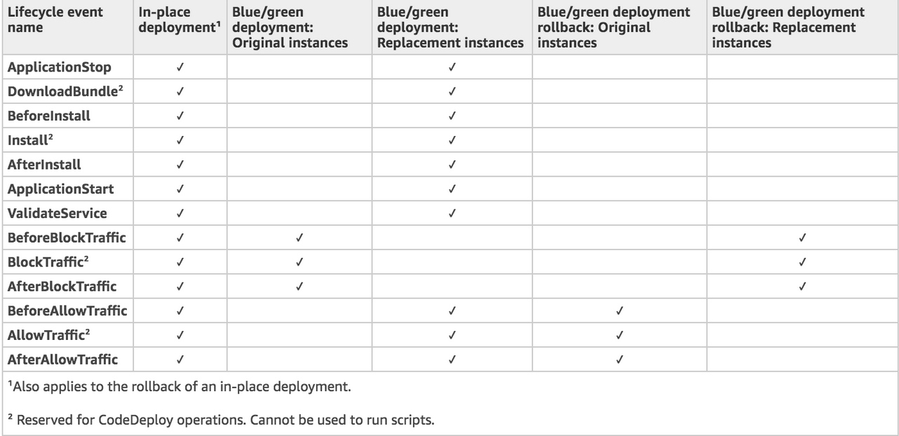
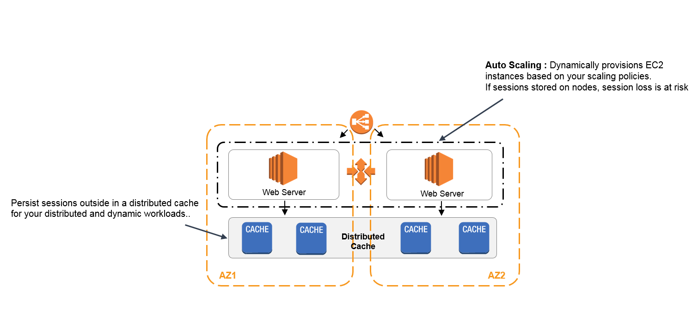
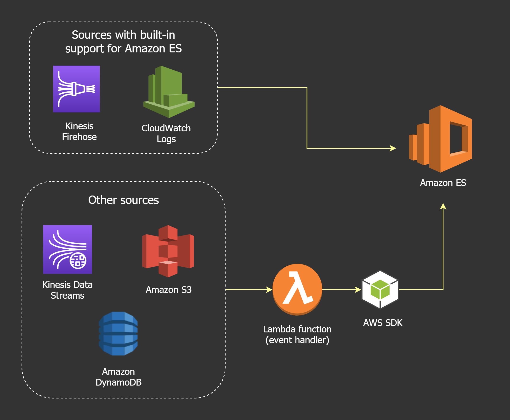
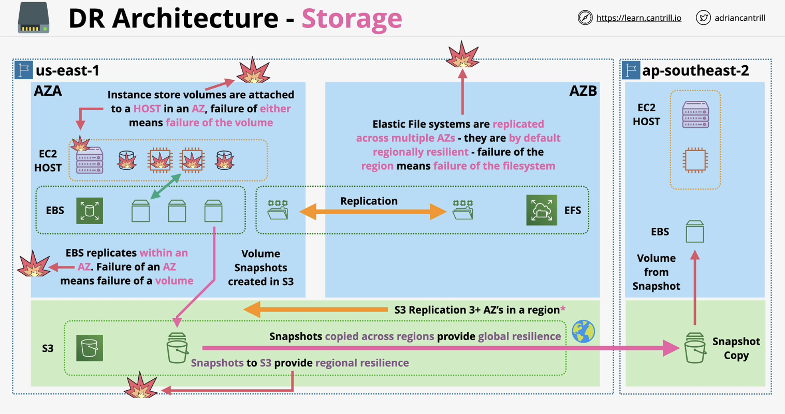

About
This book contains material for preparing for the AWS DevOps Professional (DOP-C02) certificate. It is built using Rust's mdBook.
Content
- Background
- Identity and Permissions
- SDLC Automation
- Cloudformation
- AWS OpsWorks
- Serverless
- Compute
- Routing, balancing and DNS
- Secrets and Keys
- Security practices and automation
- AWS Storage
- SNS and SQS
- Logging
- Kinesis
- AWS Config
- Disaster Recovery
- Architecture evolution example 1
- Final exam notes
Background
Here is some general information relevant to DevOps and cloud computing.
Cloud computing
NIST defines 5 characteristics of cloud computing:
- on-demand self-service
- broad network access
- resource pooling
- rapid elasticity
- measured service
Cloud computing services:

DevOps principals
- Collaboration
- Communication
- Transparency
Continuous integration
When developers regularly merge their code changes into a central repository, after which automated builds and tests run.
Continuous delivery
When code changes are automatically built, tested and prepared for a release to production.
Infrastructure as code (IaC)
When infrastructure is provisioned and managed using code and software development techniques such as version control and continuous integration.
Monitoring and logging
Enables organisations to see how application and infrastructure performance impact the experience of the end user.
Deployment strategies
Defines how software is delivered.
In-place deployment
- The previous version of software is stopped, the latest version is installed and the new version of the application is started
- New infrastructure does not have to be created
- Service outage is assumed
Blue/green deployment
- A technique for releasing an application by shifting traffic between 2 identical environments running differing versions of an application
- Enables launching a new version (green) of an application alongside an old version (blue) to monitor and test before traffic is re-routed
- Minimises downtime and allows rollback
Canary deployment
Incrementally deploying a new version in a slow fashion until eventually replacing the old with the new version entirely.
Linear deployment
Traffic is shifted in equal increments in a way where you can specify the percentage of traffic to be shifted every number of minutes.
All-at-once deployment
All traffic is shifted from original environmnet to the new one all at once.
Forward and reverse proxy
Forward proxy
A server that sits infront of the client machine and intercepts requests to the internet and communicates on behalf of the clients as a middleman.
Example usage includes: blocking access to certain content, protecting online identity by using the proxy's IP address.
Reverse proxy
A server that sits infront of the web servers intercepting requests from clients such that the client does not communicate directly with the origin server.
Benefits include load balancing, protection from attacks, caching, SSL encryption.
DNS
A DNS zone is a database containing records. A nameserver (NS) is a DNS server that hosts 1 or more zones. (More on that in the Route53 chapter).
DNS query flow:
- A user requests a domain eg. www.netflix.com
- DNS is used to locate the authoritative zone which hosts the record(s), to obtain the IP address of this domain
- First the local cache and host file is checked
- Next a DNS resolver is used, usually provided by the ISP (Internet Service Provider)
- The resolver checks its cache and if needed, queries the root zone via 1 of the root servers. The IP of this server is maintained in the browser
- The root server will return details of the
.comnameservers - The resolver then queries the netflix.com DNS nameservers
- They will return an authoritative response
- This might just give a CNAME instead of an IP, in which case another query is needed
Cross-Origin Resource Sharing (CORS)
Origin is the site you visit.
Same-origin requests are always allowed, eg. when the browser calls a domain which defines origin.
Cross-origin requests are made to different domains than the origin i.e. when the AWS API is called to retrieve an image from another bucket. These requests are always restricted but are controlled by CORS. CORS are defined on the origin and provide directives to allow the cross-origin requests.
CORS configuration can be defined on S3 buckets using JSON. CORS configuration is processed in order.
Request types
There are 2 types of requests to a resource that could require a CORS configuration.
-
Simple requests: works as long as the other origin is configured to allow requests from the original origin.
-
Preflight and Preflighted requests: when the browser sends a HTTP request to the other origin to determine if the request you are making is safe to send.
CORS configuration
Some relevant configuration that the other origin sends to the web browser:
Access-Control-Allow-Origincan be*or a particular origin allowed to make requestsAccess-Control-Max-Ageindicates how long results of a preflight request can be cachedAccess-Control-Allow-Methodsdefines methods that could be used for cross-origin requestsAccess-Control-Allow-Headerscan be contained in the CORS configuration and in the response to a preflight request and indicates which HTTP headers can be used with the request
OSI model
The OSI (Open System Interconnection) model is a conceptual model which enables diverse systems to communicate using standard protocols.
// L7: application
// L6: presentation
// L5: session
// L4: transport
// L3: network
// L2: data link
// L1: physical
Host layers: L7, L6, L5, L4. How the data is chopped up and reassembled for transport and how it is formatted to be understandable.
Media layers: L3, L2, L1. How data is moved between point A and point B.
L1: Physical
- A physical medium can be copper (electrical), fibre (lights) or WIFI (radio frequency)
- L1 specifications define the transmission and reception of raw bit streams between a device and a shared physical medium. It defines things like voltage levels, timing, rates, distances, etc.
- This layer defines standards for transmitting onto the physical medium and standards for receiving
- Is primitive i.e. everything is broadcast and there is no inter-device communication or access control
L2: Data link
- Requires a functional L1
- Devices at L2 have a unique hardware address (MAC)
- L2 provides frames which are a format for sending information over a L2 network
- The transmission and reception of frames is handled by L1
- A frame is a container of bits divided into parts eg. destination MAC address, source MAC address, payload, etc.
- L2 can interpret the parts of a frame it has received, L1 can't
- L2 facilitates data transfer between 2 devices on the same network (intra-network)
L3: Network
- Used to facilitate data transfer between devices on different networks
- Adds IP for cross-network routing
- IP packets are moved from source to destination and encapsulated inside different frames along the way
- It is able to break down the segments that it receives from the transport layer into packets which are reassembled on the receiving device
It is useful to know at this point that a subnet mask allows a host to determine if an IP address; it needs to communicate with, is local or remote which influences if it needs to use a gateway or can communicate locally.
A subnet mask of 255.255.0.0 and /16 prefix mean the same thing.
ARP (Address Resolution Protocol) is used when you have a L3 packet and you want to encapsulate it inside a frame and then send that frame to a MAC address. The MAC address is not known and you need a protocol which can find the MAC address for a given IP address.
Routers are L3 devices i.e. they understand L1, L2 and L3.
L4: Transport
- Protocols include TCP and UDP
- TCP is used for reliability, error correction and ordering of data. It is slower and creates a bidirectional channel of communication
- UDP is faster but less reliable
- TCP introduces segments which are encapsulated inside IP packets
- This layer relies on L3 for transport but introduces source and destination ports
- TCP establishes a reliable connection between 2 devices. A connection or a channel is a collection of segments.
- TCP uses a 3-way handshake with signals such as SYN, ACK and FIN
Containers
Virtualisation is running multiple operating systems on the same physical hardware.
------------------------------------------
App 1 | App 2 | ... | App N
------------------------------------------
Runtime 1 | Runtime 2 | ... | Runtime N
------------------------------------------
Guest OS 1 | Guest OS 2 | ... | Guest OS N
------------------------------------------
AWS Hypervisor (NITRO)
------------------------------------------
AWS EC2 host
------------------------------------------
The OS alone takes a lot of resources 60% to 70% of the disk and a lot of memory leaving little resources for the applications which run in the VMs.
Most of the time, the same OS is running on multiple VMs i.e. there's duplication.
Containerisation is when a container runs a copy of a Docker image.
---------------------------------------------
Container 1 | Container 2 | ... | Container N
---------------------------------------------
Container Engine (a process)
---------------------------------------------
Host OS
---------------------------------------------
AWS EC2 hardware
---------------------------------------------
The container which is (app + runtime) consumes little resources and is lightweight.
Docker image
- The Docker image is made of multiple independent layers, it is a stack of layers.
- The Dockerfile is used to create the Docker image
- Each line creates a new filesystem layer inside the Docker image
FROMis used for the base image- The filesystem layers that make up an image are read-only
- The Docker container is a running copy of the Docker image plus a read/write layer
- Multiple containers can be created from 1 image
- Layers are re-used minimising resource usage, the read/write layer is what differentiates containers.
- A container registry is a hub of container images
- Containers are isolated from the outside world and they can expose ports so that the services in the container can be accessed
General Disaster Recovery
Observability questions to ask
- What is the average response time of the website over the last hour?
- Are there any error rate spikes?
- What specific endpoints are taking long to respond?
These questions are answered through data provided by the application's logs, metrics, traces.
Relevant metrics include:
- CPU usage
- memory usage
- response times
- database query execution time
- 4xx and 5xx errors
Observability Vs. Monitoring
-
Monitoring tells you that a system has failed while observability helps you find out why that system failed.
-
Monitoring is tooling that allows teams to watch and understand the state of their system via metrics and logs.
-
Observability is not about knowing that something went wrong but about understanding why it went wrong. For example, a website slows down unexpectedly -> analyse and review logs to identify a recent code deployment that caused a memory leak.
Resiliency
Is the ability of a workload to recover from infra, service or app disruption. Disaster recovery (DR) is part of the resiliency strategy and it concerns how the workload responds when a disaster strikes. This is based on RPO (recovery point objective) and RTO (recovery time objective).
RPO
- How much data a business can lose expressed in time
- Is determined using the time at which a successful backup of data occurs
- More frequent backups -> lower RPO eg. a backup every 6 hours
- What is considered an acceptable loss of data is defined by the organisation
RTO
- The max tolerable length of time that a system can be down for after a failure occurs
- Can be reduced by effective monitoring, notification and processes
Backup and recovery strategies on cloud
By deploying across multiple AZs in a single AWS region, your workload is better protected against failure of a single (or even multiple) data centres. For extra assurance, you can back up data and configuration to another region.
In addition to data, you must redeploy infrastructure, configuration and application code. To enable infrastructure to be redeployed quickly, you should always redeploy using IaC.
In addition to user data, you should back up code and configuration including any machine images (AMI) used to create EC2 instances. The AMI can be created from snapshots of an EC2 instance.
For S3, you can use CRR (Amazon S3 Cross-Region Replication) to asynchronously copy objects to an S3 bucket in the DR region continuously, while providing versioning for the stored objects so that you can choose your restoration point.
Another strategy is to have active and passive regions. An active site in a region is used to host the workload and serve traffic. A passive site in another region is used for recovery. The passive site does not actively serve traffic until a failover event is triggered.
You can use a warm standby approach where you have a fully scaled down but functional copy of production in another region. This approach decreases the time to recovery.
High Availability (HA)
HA does not aim to stop failure and it does not mean customers will not experience outages. A HA system is designed to be online providing services as often as possible such that when it fails, it can be fixed as quickly as possible often via automation.
Fault Tolerance
Is the property that enables a system to continue operating properly in the event of the failure of some (1 or more) of its components.
Disaster Recovery (DR)
Is a set of policies, tools and procedures to enable the recovery or continuation of vital technology infrastructure and systems following a natural or human-induced disaster.
Identity and Permissions
IAM (Identity and Access Management)
An AWS account is a container for identities and resources. Every AWS account has a unique email which is that of the root user of the account.
With IAM, you can create users, groups and roles. Multiple identities can be created within a single AWS account. A max of 5000 IAM users are allowed per account. And an IAM user can be a member of max 10 groups.
Identity types
- users: for humans or applications
- groups: a collection of related users eg. developers
- roles: for AWS services or for getting external access
Policies
Policies can be created and attached to users, groups or roles to allow or deny access to AWS services. It contains statements which grant or deny permissions to AWS services.
A statement object consists of:
- Sid: statement ID
- Effect: is either allow or deny
- Action: a list of actions/operations on a service
- Resource: a list of resources/names
A policy can be:
- managed: used for multiple identities
- inline: used for exceptional allow/deny to a managed policy
IAM Groups
- Are containers for IAM users
- Groups can not be nested in other groups
- In a policy, users and roles can be referenced using their ARN. Groups however can not be referenced in policies because groups are not a true identity. Groups can have permissions attached to them.
IAM Roles
- Used by multiple principals, humans, service, applications or an unknown number of principals
- Roles are generally used on a temporary basis i.e. borrowing permissions for a short time
- Roles can have identities, premissions, policies attached to them
- Roles can be referenced in resource policies
- Roles can have 2 types of policies attached: Trust policy and Permissions policy
Trust policy controls which identities can assume that role.
Permission policy controls access to resources.
Scenarios for using role:
-
In case of AWS services like Lambda where it needs access rights to perform actions. You should avoid hardcoding access keys into the Lambda function. A role is created and the Lambda function is added to its Trust policy. This role has a Permissions policy which grants access to AWS products and services. The
sts::AssumeRoleis then used by the Lambda function. -
External identity. To allow users with external identities outside of AWS to do single sign-on. This use case enables exceeding the 5000 user-limit enforced on AWS accounts. In this example, a role can be assumed by an external identity.
ARN (Amazon Resource Name)
Used to uniquely identify resources within an AWS account.
It can have the following structures:
arn:partition:service:region:account-id:resource-idarn:partition:service:region:account-id:resource-type/resource-idarn:partition:service:region:account-id:resource-type:resource-id
Eg. arn:aws:s3:::my-bucket/*
AWS Organisations
This allows larger businesses to manage multiple AWS accounts
Start by taking a standard AWS account which is not in an organisation. Within this account, create an organisation. This account then becomes the management or master account of the organisation. The master account is used to invite other standard accounts into the organisation. The standard accounts that join an organisation become member accounts.
The structure of an organisation is hierarchical i.e. there is an organisation root containing organisation units.
The organisation has consolidated billing i.e. billing is removed for member accounts. Billing is passed to the management account of the organisation.
New accounts can join an organisation via a link or they can be created directly. When creating or adding a new account to an organisation, a role is created or manually added respectively. This role allows the management account to switch into those new accounts.
SCP (Service Control Policy)
- A feature of AWS organisations which can be used to restrict AWS accounts
- SCP is a JSON policy that can be attached to an organisation, organisation unit or AWS account
- The management account is never affected by SCPs attached to the organisation. The management account can't be restricted
- SCP does not grant permissions, it only creates boundaries
- The default is Allow, you need to add Deny or remove the default Allow access
Example organisation structure:
Root
|
|---> management account
|---> Dev (OU)
|
|---> dev account
|
|---> Prod (OU)
|
|---> prod account
The SCP needs to be enabled.
FullAWSAccesspolicy is active- Create a new SCP eg. to deny S3 actions
- Apply the new SCP to the prod OU
- Detach the
FullAWSAccessSCP from prod OU - When you switch roles to the prod account, you will not have access to S3
Advanced Identity and Permissions
Security Token Service (STS)
STS generates temporary credentials when the sts::AssumeRole* operation is used to gain access to temporary credentials. This happens behind the scenes.
This is similar to access keys, however these credentials are short-term and they expire after a certain duration.
The credentials generated are used to gain access to AWS resources. The credentials are requested by another identity or service via IAM or external.

Boundary policies
They use JSON documents like identity policies but they don't grant any permissions only limit what permissions an identity can receive.
AWS policy evaluation logic order
-
Explicit deny
By default, all requests are denied unless a policy explicitly allows them. Check for any policy that has an explicit Deny that matches the request.
-
SCPs (Service Control Policies)
SCPs are set on Organisational Units (OU).
-
Resource policies for services that support them eg. S3 buckets.
-
IAM permissions boundaries attached to the user or role.
-
Session policies, passed in the STS
AssumeRolecall and targets the session during which the role is assumed. -
Identity-based policies attached to user or role.
Amazon Cognito
Helps implement secure sign-in and access control for users, AI agents and microservices in minutes.
It supports login with social identity providers and passwordless login using WebAuthn passkeys or SMS and email one-time passwords.
Cognito enables identity federation where you don't need to create custom sign-in code or manage user identities. Users can instead sign in using an external identity provider (IdP) such as Login with Amazon, Facebook, Google or another OpenID Connect (OIDC)-compatible IdP. They can receive an authentication token and exchange the token for temporary security credentials in AWS that map to an IAM role with permissions to use resources in an AWS account.
How it works / use case
To enable the mobile app to access your AWS resources, you should first register for a developer ID with your chosen IdPs. You can also configure the application with each of these providers. In your AWS account that contains the Amazon S3 bucket and DynamoDB table for the game, you should use Amazon Cognito to create IAM roles that precisely define permissions that the game needs. If you are using an OIDC IdP, you can also create an IAM OIDC identity provider entity to establish trust between your AWS account and the IdP.
In the app’s code, you can call the sign-in interface for the IdP that you configured previously. The IdP handles all the details of letting the user sign in, and the app gets an OAuth access token or OIDC ID token from the provider. Your mobile app can trade this authentication information for a set of temporary security credentials that consist of an AWS access key ID, a secret access key, and a session token. The app can then use these credentials to access web services offered by AWS. The app is limited to the permissions that are defined in the role that it assumes.
SDLC Automation
A development pipeline can be generally broken down to the following stages:
- code
- build
- test
- deploy
AWS provides a range of tools that support all of those stages, for example:
- CodeCommit similar to GitHub
- CodeBuild which can handle the build and test processes
- CodeDeploy which supports code deployment within AWS
These AWS tools are isolated but they can be configured together using AWS CodePipeline which orchestrates the development pipeline.
A pipeline is linked to 1 branch in a repository eg. a main pipeline or a dev pipeline.
CodeCommit
A source control service that hosts private Git repos. It uses HTTPS and SSH for file transfer; repos are encrypted at rest with AWS KMS.
On the backend, it uses S3 and DynamoDB to store repos. It can recieve notifications from Amazon SNS and repos can send notifications with Amazon SNS or invoke AWS Lambda functions.
CodeArtifact
Is a service used to securely store, publish and share software packages. It can be configured to automatically fetch public packages and dependencies using popular package managers and build tools like Maven, Gradle, npm, Yarn, Twine, pip and NuGet.
CodeBuild
Is a build-as-a-service product that lets you manage a build environment where you pay for the resources consumed during builds. It is also used during the test stage.
CodeBuild is a CI service that can compile source code, run tests and produce software packages ready to deploy. It manages the build servers.
It accepts source code from GitHub, CodeCommit, BitBucket, S3 and GitHub Enterprise and can integrate with open source tools like Jenkins and Spinnaker. CodeBuild supports webhooks when the source repository is GitHub which means that webhooks can be used to rebuild the source code every time a code change is pushed to the repo.
It offers pre-configured environments but also allows customised envs as Docker containers.
Can log output to S3 and CloudWatch Logs. Can also push events to EventBridge.
The build file
CodeBuild can be customised via the buildspec.yml in the root directory.
This file has 4 main phases:
- install: for major environment installations
- pre_build: install dependencies
- build: source code is built into application
- post_build: to package things up, push to Docker or send notifications
The build spec file also allows you to define environment variables eg. parameter store or secrets manager variables.
It also contains an artifacts section.
CodeDeploy
Is a code deployment as-a-service product. It deploys code not resources i.e. a web application and not a fleet of EC2 instances. It automates deployment to compute services like EC2, Fargate, Elastic Beanstalk, Lambda and on-premises servers.
A CodeDeploy agent needs to be installed which communicates with the product and implements instructions.
It can be used to deploy using CloudFormation and it integrates with tools like CodePipeline, GitHub and Jenkins.
BlueInstanceTerminationOption
Is an option within CodeDeploy to determine whether instances in the original environment are terminated when a blue/green deployment is successful. BlueInstanceTerminationOption does not apply to Lambda deployments.
The appspec file
CodeDeploy is customised using appspec.yml or appspec.json files.
This file contains configuration + lifecycle event hooks.
Lifecycle event hooks such as ApplicationStop, DownloadBundle, BeforeInstall, Install, AfterInstall, ApplicationStart, ValidateService.
The configuration section has:
- files (for EC2/on-premise): provides information to CodeDeploy about which files need to be installed on the EC2 instance during the deployment.
- resources (for ECS/Lambda): for Lambda it contains the information about the Lambda function used during deployment. For ECS, it contains things like task definitions or container information.
- permissions (for EC2/on-premise): details any special permissions that need to be applied on parts of the filesystem.
TheAppSpec file has a hooks section. A Lambda function can be specified for the lifecycle hook you want to test. If the test fails, the deployment stops, rolled back and marked as failed. For example, the AfterAllowTestTraffic hook can be used to validate deployment using test traffic with traffic served to a test listener. If validation succeeds, the deployment continues to the BeforeAllowTraffic hook.
Some hooks:

AWS Serverless Application Model (SAM)
This comes built-in with CodeDeploy to provide gradual AWS Lambda deployments. It does the following:
- Deploys new versions of a Lambda function and automatically creates aliases that point to the new version
- Gradually shifts customer traffic to the new version until the decision to shift all traffic
- Defines pre-traffic and post-traffic test functions to verify that the newly deployed code is configured correctly
CodePipeline
Is a continuous delivery tool designed to control the flow from source code through build and finally deployment. It is the glue that holds things together. It is a service used to model, visualise and automate the steps required to release a software.
Pipelines are built from Stages (eg. Build stage) which contain sequential or parallel actions. The output of one action can be the input of another action.
A single pipeline structure is hosted in a single region; however, individual Actions within a stage can execute in a different target region. When you configure a cross-region action, CodePipeline requires an S3 artifact bucket in every target region where an action takes place.

CodePipeline can be triggered as follows:
- Pipeline creation: a pipeline gets triggered when created.
- Put action or changes on objects in the pipeline.
- CloudWatchEvent trigger: the source action provider here is CodeCommit.
- Webhook events for 3rd party sources like GitHub, BitBucket, GitLab, etc.
- Manually triggering the pipeline
Practical example
Manual CodeBuild process
Steps to create a Docker image from a code repository.
- create a code repo on CodeCommit
- create an ECR repo on ECR
- create a build project in CodeBuild
- here you can use the CodeCommit repo as the source of the Dockerfile to build
- specify an environment eg. OS type where the build will run
- specify the destination image repo i.e. where the container image built will be stored
- you can use CloudWatch to store logs
- configure the right permissions
- Permissions are required for the build project to interact with other AWS services.
To add permissions, create an inline policy in the IAM role used by the CodeBuild project. Permissions to interact with ECR eg.
PutImage.
- Permissions are required for the build project to interact with other AWS services.
To add permissions, create an inline policy in the IAM role used by the CodeBuild project. Permissions to interact with ECR eg.
- configure the build spec YAML file
buildspec.ymlwith the various build steps.
Automated CodeBuild process
Whenever code is commited to the code repo, an automated build pipeline will run to build the image and store it on ECR. This is done using CodePipeline.
- create new CodePipeline
- allow CodePipeline to create a new service role
- select a source i.e. the CodeCommit repo
- select a build provider i.e. CodeBuild where the build project exists
- artifacts are by default stored in S3
- you can have a step in the
post_buildstage to create a JSON file containing information about the image created. You can store this file in S3 and use it for the deployment step.
Add a deploy step to the pipeline
- create an application load balancer, configure security groups and a target group
- create an ECS cluster, create a task and container definition. Use the image created the during code build stage.
- add a deploy stage in the CodePipeline pipeline. Use the image definitions JSON file containing information about the built image in this step.

Cloudormation (CFN)
Cloudformation allows automating infrastructure provisioning using JSON or YAML templates. A template; which can be reusable, defines logical resources and results in the creation of a stack.
The stack definition will create physical resources based on the logical resources. If the stack definition is updated, the physical resources will also change.
Templates can take parameters i.e. they accept input. Parameters are defined in the template and can have a type for eg. an EC2 image. Pseudo parameters are defined by AWS. They are injected by AWS into the template eg. Region, stack ID, stack name, account ID, etc.
Cloudformation does things in parallel which is why directives like DependsOn can be used to define an order of execution.
Cloudformation can be configured to wait until a number of signals are successful before returning the CreateComplete signal.
Dynamic references
Provide a compact and powerful way to specify external values that are stored and managed in other services such as the Systems Manager Parameter Store, in your stack templates. When dynamic references are used, CloudFormation retrieves the value of the specified reference when necessary during stack and change set operations.
CloudFormation currently supports the following dynamic reference patterns:
- ssm, for plaintext values stored in AWS Systems Manager Parameter Store
- ssm-secure, for secure strings stored in AWS Systems Manager Parameter Store
- secretsmanager, for entire secrets or specific secret values that are stored in AWS Secrets Manager
Intrinsic functions
- Allow you to gain access to data at runtime i.e. when the template is being used to create a stack, for example:
RefandFn::GetAttFn::JoinandFn::SplitFn::GetAZsandFn::SelectFn::(IF, And, Equals, Not, Or)Fn::Base64andFn::SubFn:CidrFn::Import ValueFn::FindInMapFn::Transform
Mappings
- Is an object in the template eg. map the prod env to a specific database config
- Mappings use the
!FindInMapintrinsic function
Outputs
- Provide status information or how to access services created by a stack
- Outputs are optional
Nested stacks
- There is a limit of 500 resources per stack and nested stacks can be used to overcome this resource limit
- Stacks are isolated and resources in them can't be referenced
- A root stack is the stack that gets created first
- A parent stack usually has nested stacks
- You can define a stack as a logical resource and make it refer to a YAML template
- Use nested stacks when resources are lifecycle-linked i.e. create and deleted together
Cross-stack references
- Is used when we want to create a shared resource eg. VPC usable by other stacks
- Stacks are isolated meaning things in a stack can't be referenced by another i.e. the
!Reffunction can't be used, with the exception that root stacks can reference the output of a stack - A use case of this is a VPC stack with a long lifecycle and app stacks that use it but have a shorter lifecycle
- Outputs of a stack can be exported making them visible to other stacks. You can then use
Fn::ImportValuein another stack instead of!Refin the same stack
Stack sets
- Allow you to deploy CFN stacks across many accounts and regions
- Stack sets are containers in an admin account. They contain stack instances that reference stacks
CFN DeletionPolicy
- Deleting a stack causes deleting a physical resource. This can cause data loss for eg. databases
- The deletion policy can be defined on a resource in a CFN template to specify an action for when the resource is deleted eg. Delete, Retain, Snapshot
CFN stack roles
- By default, CFN uses the permissions of the logged in identity
- CFN can assume another role to gain permissions
- We have a role attached to a stack
- a user creates a template with a role attached
- this user has
PassRolepermissions but doesn't actually have permissions to create the stack - the role can be created by an admin
CFN Init, cfn-init and cfn-hup
- Is a configuration management system
- The CFN Init can be defined in the metadata of a logical resource in a template.
UserDatacan be passed which containscfn-initused to implement the config we define cfn-initonly runs once and doesn't run again when the stack is updatedcfn-hupcan point at a logical resource in a stack to detect changes in its metadata. When it detects change it can run things likecfn-init
Notes on creating CFN templates
- The
UserDatasection serves as an init script that runs automatically when an EC2 instance launches for the first time. It executes at boot time - CFN waits for a signal from the EC2 instance. As soon as the instance is launched, CFN marks Creation Complete even though the
UserDatascript is still running i.e. instance bootstrapping hasn't finished.- here you can use
CreationPolicyandcfn-signalto signal to Cloudformation when bootstrapping the instance is finished
- here you can use
- The
UserDatapart is only executed once when the instance launches. If theUserDatais changed and the stack is updated, the instance won't rerun this configuration - Use the
cfn-initfeature andcfn-hupto reruncfn-initon metadata changes
CFN change sets
- Provides an overview of the changes that are to be applied to a stack. You can preview many change sets for a stack. The chosen change set can then be applied to the stack
CFN custom resources
- CFN doesn't support creating all AWS products
- Use custom resources to compensate for what CFN does not support natively
- eg. a Lambda function used to populate or remove items from a bucket. This is because CFN can't delete buckets that have objects in them. The Lambda function receives a CREATE or DELETE event and then uploads or deletes bucket items. The custom resource references both the Lambda function and then bucket.
CFN drift detection
- When the logical resources and the physical resources in a stack no longer match
- CFN offers drift detection
- What can be done is:
- removing the logical resources while keeping the physical resources in place and then importing those physical resources to bring back into sync the relationship between logical and physical resources
Exam notes
-
If a multi-region deployment via StackSets fails in the first region and the engineer wants to ensure that future failures stop the rollout immediately, the
FailureToleranceparameter can be decreased to 0 or 1 so that a single failure terminates the entire global deployment execution loop. -
If a CloudFormation stack deployment fails and gets permanently stuck in
UPDATE_ROLLBACK_FAILEDbecause an S3 bucket was manually deleted, execute theContinueUpdateRollbackaction via the CLI/Console, specify skipping the deleted S3 bucket and let the stack reach a stable state then manually remove it from the template. -
To create a decoupled, shareable infrastructure without hardlocking stacks, do not use
Fn::ImportValue. Instead, publish the variable into SSM Parameter Store using a strict naming pattern and have the application stack read the values dynamically using Dynamic References. This helps avoid locked dependencies. -
If a custom resource in a CFN stack is used to invoke a Lambda function, the request will include a pre-signed URL. The Lambda function is responsible for returning a response to this pre-signed URL to indicate if the resource creation was successful or not. If the Lambda function fails to respond to the pre-signed URL, the CloudFormation stack will remain in the
CREATE_IN_PROGRESSstate.
AWS OpsWorks
- Is a configuration management service that helps you configure and operate applications in AWS when you use Puppet or Chef
- Is an AWS service that provides implementations of Chef and Puppet. Chef and Puppet are automation platforms that allow you to use code to cofigure servers
- Use OpsWorks if you are already using Chef or Puppet
OpsWorks modes
OpsWorks functions in 3 modes:
- Puppet Enterprise: where you can create an AWS managed Puppet master server
- Chef Automate: you can create AWS managed Chef servers
- OpsWorks: is an AWS implementation of Chef and is managed by AWS
OpsWorks components
- Stacks: is the core component, a container of resources which share a similar function
- Layers: represent a specific function in the stack eg. load balancer layer, database layer, etc. Recipes and cookbooks are applied to layers
- Lifecycle Events: are events that run on layers eg. Setup, Configure, Deploy, Undeploy and Shutdown
- Instances: are manages by OpsWorks. 3 types of instances: 24/7, time-based and load-based. OpsWorks supports instance healing
- Apps: can be stored in buckets and are deployed in the app layer

Serverless
AWS Lambda
Is a Function-as-a-Service (FaaS) and part of serverless or event-driven architecture. It is stateless i.e. every time the function is invoked, it uses a brand new environment.
Lambda functions can run for up to 900 seconds ~ 15 minutes and they assume IAM roles to interact with other AWS resources. Lambda is also provided an execution role.
Lambda networking modes
1. Public
- In the public AWS network
- Can access public-space AWS services like SQS and DynamoDB as well as the public internet
- But Lambda here has no access to services running in a VPC unless they have a public IP and access permissions
2. Private / VPC
- Lambda runs in a private subnet in a VPC and is subject to the networking rules of that VPC
- In this case rules need to allow Lambda access to public internet
- The Lambda here still needs permissions to interact with services in the same subnet
Invoking a Lambda function
A Lambda function can be invoked in 3 different ways:
Synchronous
Where the client waits for a response from the Lambda function.
Asynchronous
For when an AWS service invokes a Lambda function. The service does not wait for a response. Upon failure, the Lambda function will do a retry.
Event source mapping
This is used on streams or queues which don't generate events.
Lambda function versions
Lambda functions can have different versions eg. 1, 2, 3, etc. A version is the function code plus the configuration.
Once published, a version is immutable and has its own ARN. The $latest tag points to the latest version of a Lambda function. Aliases can be created to point at a particular version of a Lambda function eg. a prod alias.
Lambda startup time
- A Lambda function can have a warm or cold startup
- AWS creates and keeps execution contexts warm and ready to use
- To speed up running a Lambda function, the execution context can be reused. This is done using a feature called Provisioned Concurrency where an execution context is provisioned in advance.
- Use
/tmpto pre-download artifacts eg. images that will be available to other functions using the execution context. - You should however by default assume that execution contexts are stateless.
Lambda function handler
Lambda execution lifecycle
- init: creates or unfreezes the execution environment
- invoke: runs the function handler
- next invoke(s): warm start eg. same environmnet
- shutdown: terminate the environment
init includes:
- extension init
- runtime init
- function init
shutdown has:
- runtime shutdown
- extension shutdown
Lambda function has 2 parts:
- function init: this is executed during cold starts. It contains anything that might be reused eg. database connection.
- invoke: the handler component which performs the logic of the function.
Logging and tracing
Lambda sends execution logs to Cloudwatch logs /aws/lambda/<function name> log group but the STDOUT/STDERR can also be viewed in the function itself.
To log, the Lambda function needs permissions provided via the execution role.
X-Ray shows requests to the function and Active Tracing can be enabled on the function. To set up an application running on ECS to use X-Ray, the application's Docker image should run the X-Ray daemon. The port mapping and network settings can be configured in the task definition to allow traffic at UDP port 2000.
Lambda Extensions
Allows users to easily integrate tools for monitoring, observability, security and governance without complex installation or configuration management. Extensions can run in 2 modes:
-
Internal extensions run as part of the runtime process, in-process with the Lambda code.
-
External extensions run in a separate process from the runtime but within the execution environment as the Lambda function. External extensions can start before the runtime process and can continue after the runtime shuts down.
Lambda layers
This groups similar libraries into layers that can be shared between Lambda functions instead of including those libraries in every function. You can create layers or use pre-existing ones provided by AWS.
Lambda container images
This is used when CI/CD processes produce container images. To use the container image with Lambda, you need to include the Lambda runtime API within the image.
Lambda funtion permissions
- execution role: assumed by the function. It determines what the function can do.
- resource policy: determines who can do what with the Lambda function.
The resource policy is used for cross-account invocation or for service access i.e. when a service wants to invoke Lambda eg. S3.
Step Functions
AWS Step Function is a long-running serverless workflow with a start, state and end. It builds upon the concept of state machines. A state machine; which is an abstract concept, has some internal state that can be changed in response to an external event. A state represents a step in the Step function workflow.
Step functions address some of the limitations or design decisions of Lambda functions. Eg. 15 minutes max and stateless runtime. The state machines of a Step function have a max execution duration of 1 year. They can be configured using a JSON template called Amazon States Language (ASL).
In other words, a Step Function lets you coordinate multiple AWS services into serverless workflows. It allows you to design and run workflows that stitch together services such as Lambda, Fargate, etc.
Step functions can have asynchronous and synchronous processes. They can include several steps to form a complete workflow or pipeline.
2 types of workflows:
Standard: is the default with 1 year execution limit.
Express: used for high volume event processing eg. IoT, streaming, etc.
Example architecture
-
Create a Lambda role. Its Trust Policy is that it can be assumed by the Lambda service. Its Permissions Policy is that it can interact with SES, SNS and States.
-
Create the Lambda function. Select the role created above as execution role. Update the Lambda function code and deploy the function. The Lambda function code sends emails using Python's Boto3 client.
-
Create a role for the state machine. The role's Trust Policy is that it can be assumed by States. The Permissions Policy of the role include being able to invoke Lambda functions as well as
SNS*. -
Create the step function i.e. state machine. The state machine's config is ASL. The step function invokes the Lambda function and provides a payload. Give the state machine the role you created for it.
-
Create the supporting Lambda function for the API Gateway.
-
Create the API Gateway. A REST API Gateway. Create a resource -> create a method with integration type "Lambda function". Deploy the API Gateway you created. The API Gateway will have an invoke URL.

Compute
Auto-Scaling Group
Auto-scaling allows EC2 to scale automatically based on demand placed on the system. Together with Elastic Load Balancers, Auto-scaling Groups (ASG) are used to deliver an elastic architecture.
An ASG which makes use of configuration defined in Launch Templates or Launch Configurations, has minimum and maximum desired capacity. It runs instances at a desired capacity by provisioning and terminating these instances.
Scaling policy
Scaling policies help update the desired capacity based on metrics or criteria. They can be:
-
Manual: where the desired capacity is manually adjusted
-
Scheduled: for time-based adjustment
-
Dynamic
- Simple: based on metrics, for example when CPU usage exceeds 50%
- Stepped: allows granular control for eg. if CPU usage is between 50 to 60% then add 1 instance, between 60 to 70% add 2 instances, etc. and the same in reverse.
- Target tracking: it comes with a pre-defined set of metrics eg. CPU utilisation, average network in/out and ALB request count per target.
The AWS::AutoScaling::AutoScalingGroup resource uses the UpdatePolicy attribute to define how an Auto Scaling group resource is updated when the AWS CloudFormation stack is updated. This policy supports several configuration options amongst which are:
WaitOnResourceSignalsandPauseTime: when CloudFormation waits to receive a success signal until the maximum time specified byPauseTimevalue. If a signal is not received, CloudFormation cancels the update and rolls back the stack.MinSuccessfulInstancesPercent: prevents CloudFormation from rolling back the entire stack if only a single instance fails to launch
Instance lifecycle
When EC2 Auto Scaling responds to a scale out event, it launches one or more instances. These instances start in the Pending state. If a lifecycle hook autoscaling:EC2_INSTANCE_LAUNCHING is added to the Auto Scaling group, the instance will move from the Pending state to the Pending:Wait state. After the lifecycle action is complete, the instance will enter the Pending:Proceed state. When fully configured and attached, the instance will enter the InService state.
Similary on a scale in event, the instance is detached from the Auto Scaling group and enters the Terminating state. Upon adding a autoscaling:EC2_INSTANCE_TERMINATING lifecycle hook, the instance will move from Terminating to Terminating:Wait state. After the hook is complete, the instance will enter the Terminating:Proceed state and eventually Terminated.
Single EC2 instance fault tolerance
You can create an Amazon CloudWatch alarm that monitors an Amazon EC2 instance and automatically recovers the instance if it becomes impaired due to underlying hardware failure or other.
The built-in instance recovery failure feature for Amazon EC2 does not apply to instances using store volumes.
ASG Lifecycle Hooks
Hooks enable configuring custom actions on instances to get executed for eg. during instance launch or termination.
This can be integrated with EventBridge, SNS notifications or SQS to allow event-driven processing based on launch or temination of EC2 instances within an ASG. A Lambda function on its own can not be used as a notification target for the lifecycle hook of an ASG.
ASG Health Checks
EC2 instance health is evaluated in 3 ways:
-
EC2: which is the default and uses the following unhealthy statuses:
Stopping,Stopped,Terminated,Shutting DownorImpaired. -
ELB: is the load balancer health check where the instance needs to be both healthy and pass the load balancer health check.
-
Custom: where an external system can be integrated to mark instances as healthy or not.
EC2Rescue
Is a tool that can help diagnose and troubleshoot problems on EC2 Linux and Windows Server instances. You can run the tool manually or run it automatically by using Systems Manager Automation and the AWSSupport-ExecuteEC2Rescue document.
VM Import/Export
Enables you to easily import virtual machine images from your existing envrionment to Amazon EC2 instances and export them back to your on-prem environment.
VM Import will convert the VM image to Amazon EC2 AMI which can be used to run EC2 instances. An image can be exported to an S3 bucket.
One use-case can be: launch an EC2 instance with the latest Linux OS in AWS. Use the AWS VM Import/Export service to import the EC2 image, export it to a VMware ISO in an Amazon S3 bucket and then import the ISO to an on-premises server.
It is worth noting that there is no way to directly download an ISO image from Amazon.
Neworking
-
Security groups: act as a firewall for associated Amazon EC2 instances controlling both inbound and outbound traffic at the instance level. When you launch an instance, you can associate it with one or more security groups that you've created. Each instance in your VPC could belong to a different set of security groups. If you don't specify a security group when you launch an instance, the instance is automatically associated with the default security group of the VPC.
-
Network access control lists (ACLs): act as a firewall for associated subnets, controlling both inbound and outbound traffic at the subnet level.
-
Flow logs: capture information about the IP traffic going to and from network interfaces in your VPC. You can create a flow log for a VPC, subnet or individual network interface. Flow log data is published to CloudWatch Logs or Amazon S3 and can help in diagnosis.

Elasic Beanstalk (EB)
Is a PaaS i.e. the vendor handles the infrastructure and the user provides the application code. It is developer-focussed because it provides managed environments for developer applications.
An EB "Application" is a contianer containing everything related to the application eg. infrastructure, app code, environments, versions, etc. However it is considered a best practice to keep the database deployment outside of EB.
EB deployment types
- All-in-one: service is interrupted for the duration of the deployment
- Rolling: rolls through the environment upgrading batches 1 at a time. A batch is a replica of the instance eg. 1 of 3 replicas
- Rolling with additional batch: similar to rolling but without dropping any capacity. Another batch is deployed with version 2 of the application alongside the batches with version 1
- Immutable: another full set of instances are created alongside the original i.e.
Nx 2 - Traffic-splitting: traffic is split between new and old version similar to blue/green deployment
- Blue/green: allows beta testing version 2 of the application
Ebextensions (.ebextensions)
Is a folder in the application's source bundle that allows the customisation of the EB environment. The files inside the .ebextensions folder follow a Cloudformation format (YAML or JSON).
EB and Docker
-
Single container mode: a Docker image is deployed which is described in a
Dockerfileor aDockerrun.aws.jsonfile. This mode runs 1 container per instance. -
Multi-container mode: uses Elastic Container Service (ECS) to deploy multiple Docker containers to an ECS cluster in an Elastic Beanstalk environment.
Elastic Container Service
Is a fully managed container orchestration service that helps deploy, manage and scale containerised applications. It is configured using a service definition where you define how the task should scale.
A load balancer can be deployed with the service for load distribution.
You can also configure containers in your tasks to send log information to CloudWatch Logs.
2 Cluster modes
1. EC2 mode
- There is some overhead but allows for flexibility.
- It requires manual component management for eg. scheduling, orchestration, cluster management and PlacementEngine.
- EC2 is used to run containers with ASG (Auto Scaling Group).
- You would manage the container host, capacity and availability.
2. Fargate mode
- Scheduling, orchestration and cluster management are fully handled by AWS which removes management overhead
- You don't have to manage EC2 instances as container hosts
- The difference with Fargate is how containers are actually hosted. AWS maintains a shared Fargate infrastructure platform, which is offered to all users of Fargate. You still make use of VPC.
AWS Fargate platform versions are used to refer to a specific runtime environment for Fargate task infrastructure. It is a combination of the kernel and container runtime versions. New platform versions are released as the runtime environment evolves, for example if there are kernel or operating system updates, new features, bug fixes or security updates.
To change the platform version that is being used, you can do a Force new deployment which allows a Fargate task to use a more current platform version when LATEST is used.
Elastic Container Registry (ECR)
Is a managed container image registry service. Registries can be public or private. A registry can contain many repositories.
ECR is integrated with IAM. It comes with image scanning, basic and enhanced.
ECR offers replication of container images that can be cross-region or cross-account.
Elastic Kubernetes Service
Is a fully managed service that simplifies running, securing and scaling Kubernetes applications on AWS without needing to install or maintain your own control plane. It eliminates operational overhead by automatically managing and scaling the Kubernetes master nodes.
The control plane is distibuted and managed across multiple AZs for high availability. Compute options include running workloads using EC2, Fargate or with EKS Auto Mode.
Storage permissions
In EKS, persistent storage is often provisioned using Elastic Block Store (EBS) volumes. The EBS Container Storage Interface (CSI) driver is responsible for integrating Kubernetes with EBS enabling dynamic provisioning and management of volumes as per application requirements.
The EBS CSI driver requires appropriate permissions to dynamically provision and manage EBS volumes. These permissions are managed using an IAM role often attached to the driver itself. AWS recommends assigning an IAM role to the EBS CSI driver with the necessary permissions to provision and manage EBS volumes. This ensures that the driver can perform operations such as creating volumes, attaching them to nodes and managing lifecycle events.
Routing, balancing and DNS
Elastic Load Balancing
History
There existed v1 load balancers but the most recent ones are v2. Classic load balancers (CLB); introduced in 2009, are v1 and can load balance HTTP and HTTPS but they aren't Layer 7 devices since they lack features to help understand HTTP.
Version 2 LBs should now be used and they include:
- Application load balancers (ALB) that support HTTP(S) and WebSocket
- Network load balancers (NLB) that support TCP, TLS and UDP
About
ELBs accept connections from users and distribute those connections against any registered backend compute. LBs can be private or public and they can distribute traffic across 1 or more AZs.
Types
1. Application LB
This is a true Layer 7 LB that can listen on HTTP(S) not including protocols like SMTP and SSH. It can convey traffic across various applications using Listener rules.
It can inspect Layer 7 protocol information such as cookies, headers, etc. and make routing decisions based on this information.
ALB are slower than NLB because more levels of the network stack are involved.
2. Network LB
This is a Layer 4 device that can interpret TCP, TLS and UDP with no understanding of HTTP(S) protocols.
NLBs are really fast because they don't need to deal with the upper layers of the networking stack.
3. Gateway LB
Runs at OSI network Layer 3 and provides 3rd party appliances such as firewalls and security inspection systems.
It uses the GENEVE (Generic Network Virtualisation Encapsulation) protocol on port 6081 to encapsulate and exchange traffic with 3rd party appliances.
Session state
Is a piece of server-side information specific to a single user interacting with 1 application.
Session state is hosted externally and not on an instance for eg. in a database. This allows instances to be stateless; and in case of failure, session information for a logged-in user is not lost. This is optimal for scaling instances.
Session stickiness
Stickiness allows us to control which backend instance should be used with a particular user connection. It locks a session to 1 backend instance.
Session stickiness can be enabled on an ELB with a valid duration. The LB (ALB) then generates a cookie called AWSALB delivered to a user's browser. The cookie from the user is provided to the load balancer on every request. The cookie ensures that the requests from a user are forwarded to a specific instance on the backend.
Stickiness might cause a load on backend instances saturating a server.
X-Forwarded and PROXY protocol
For ALB
When using a load balancer, the client connects to the LB and the LB connects to the backend services. The IP of the client is not visible to the backend service and only the LB IP is reached.
X-Forwarded is a HTTP header that only works with HTTP(S) protocols (Layer 7). The LB adds the client IP address as a header to the HTTP request along with any other proxy address.
For NLB
The PROXY protocol works at Layer 4 and is a tcp header.
API Gateway
Is a service for publishing, maintaining, securing and monitoring APIs at scale. It is an entry point to applications and acts as an intermediary between a client and the backend service.
It is highly available, scalable and handles authorisation, throttling, caching, CORS, etc. It is able to handle and process large volumes of API calls.
It can be deployed as private, regional or edge-optimised using Cloudfront and it supports 3 types of APIs:
- REST API: using resources and methods and is feature-rich
- HTTP API: lower latency and lower cost than REST APIs and supports minimal features eg. send request to a Lambda function or public HTTP endpoints
- WebSocket API: stateful API eg. real-time applications eg. chat bot, dashboards, etc.
Authentication
API Gateway supports a range of authentication methods:
- Cognito user pools where the client receives a token in return.
- Lambda-based authorisation where the client passes a bearer token to the API Gateway and Lambda validates the request. This can be OAuth or JWT verification.
Error codes generated by API Gateway
-
4XX client error: invalid request on the client side
- 400 bad request: generic client-side error
- 403 access denied
- 429 throttling: exceeded amount of requests
-
5XX server error: request is valid but there's a backend issue
- 502 bad gateway: bad output returned by the backend
- 503 service unavailable
- 504 timeout
API Gateway stage
Is a logical reference to a lifecycle state of your API eg. dev, prod, beta, v2, etc. It is a named reference to a deployment of the API and is made available in the URL eg. <API Gateway URL>/<stage>/<endpoint>.
Stage variables
Stage variables let you define key/values pairs of configuration values associated with a stage. They are similar to environment variables. Use cases include: 1) specifying a different backend endpoint for eg. example.com for the prod stage and dev.example.com for the dev stage and 2) passing information using mapping templates which allows reusing the same Lambda function for multiple stages in the API.
Blue/green deployment
An API mapping is used to specify an API, a stage and optionally a path that maps to a custom domain name. Traffic to that domain will therefore flow through that particular stage.
The blue/green deployment strategy runs 2 identical production environments called "blue" and "green". At any given time, only 1 environment serves live production traffic while the other remains idle.
Having 2 API endpoints one for each environment (blue/green), traffic can be switched from the blue environment to the green one by using API Gateway custom domain API mapping. This ensures that there is no change in the external-facing custom domain URL.
Canary deployment
To deploy an API with a canary release, you create a canary release deployment by adding canary settings to the stage of a regular deployment. A canary release deployment uses the deployment stage for the production release of the base version of an API and attaches to the stage a canary release for the new versions. In the canary settings canarySettings, you specify things like:
- a deployment ID initially identical to the base version deployment
- a precentage of API traffic
- stage variables that can override production release stage variables
API Gateway Integrations
API Gateway can take in a request and transform it to an integration request which is sent to the target backend service.
Types of integrations
- Mock: used for testing, no backend involvement
- HTTP: request/response are configured using mapping templates
- HTTP Proxy: request/response is not modified
- AWS: to expose AWS services
- AWS proxy: uses Lambda and no mapping is requried
Mapping templates
Are used for HTTP and AWS integration to modify or rename parameters, body, headers, etc. This is done using the Velocity Template Language (VTL).
OpenAPI Specification (OAS)
Defines a standard, language-agnostic interface for RESTful APIs which allows both humans and computers to discover and understand the capabilities of the service without access to source code, documentation or through network traffic inspection.
OAS was formally known as Swagger. Swagger is OpenAPI v2 and OpenAPI is now v3.
It is an API description format for REST APIs eg. endpoints, input/output parameters, authentication.
AWS API Gateway can export and import to Swagger/OAS.
Logging
You can use CloudWatch Logs or Amazon Data Firehose to log requests to your APIs.
CloudWatch Logs
There are 2 types of API logging in CloudWatch: execution logging and access logging. In execution logging, API Gateway manages the CloudWatch Logs. Logs include all the API Gateway internal information as the request is processed. This is useful for debugging a specific request to trace down the issue.
In access logging, the API developer would want to know who accessed the API and how the caller accessed it. Data here can be accessed inside the $context variable which contains information about the caller.
Data Firehose
API calls can be logged to Amazon Data Firehose. For access logging, you can only enable CloudWatch or Firehose - you can't enable both. You can enable CloudWatch for execution logging and Firehose for access logging.
Useful resources
Route53
Is AWS's managed DNS product which provides 2 main services:
- Domain registration
- Hosting zone files on managed nameservers
It is a global service with a single database i.e. no region is needed on usage. It is globally resilient.
How it works
Route53 has relationships with all of the domain registries eg. .com, .io, .net. And relationships with the PIR (Public Interest Registry) for the .org registery.
First Route53 checks with the registry for the top-level domain if the domain is available.
Creates a zone file for the domain being registered. And allocates nameservers for this zone, generally 4 nameservers per zone. They are distributed globally.
Zones are called hosted zones in AWS terminology. AWS puts the zone file on the 4 nameservers.
It communicates with said registry and adds the nameserver (NS) records into the zone file for the .org top-level domain using NS records on the .org registry. Which then indicates that the 4 nameservers are authoritative for the domain.
Hosted zones
Zone files are hosted on AWS managed nameservers. A hosted zone on AWS can be public or private.
DNS record types
A and AAAA
Given a DNS zone eg. google.com, these records map IP addresses to DNS names.
A records map to IP v4 address.
AAAA records map to IP v6 address.
CNAME
Stands for canonical name. Given a zone, the CNAME allows you to create DNS shortcuts to host records. It does not point to an IP.
For example, CNAME ftp, CNAME mail and CNAME www all point to an A server record which means they will all resolve to the same IP v4 address.
TXT
These records allow you to add arbitrary text to a domain. For example to prove domain ownership.
MX
It is how a server can find the mail server for a specific domain to connect to via SMTP. It does that via an MX lookup or query.
MX records have 2 parts: priority and value.
The value can be a host eg. mail which resolves to mail.mydomain.com i.e. same zone.
The value can have a dot at the end mail.other.domain. which means it is a fully qualified domain name i.e. can point to the same zone or something outside.
NS
Allows delegation to occur in DNS. NS records in the organisation registry eg. .com point at NS servers managed by AWS that host the zone.
TTL (Time to Live)
Can be set on DNS records (in seconds). For example TLS of 3600 means that the result of a DNS query is stored/cached at the resolver server for 3600 seconds.
Below is a diagram of walking the tree to get a result from the authoritative source.

Route53 Public Hosted Zones
A hosted zone is a DNS database for a given section of the global DNS database for a domain. They are created automatically (or manually) when you register a domain.
There is a monthly fee to host a hosted zone and a fee for queries made against the hosted zone.
A zone hosts DNS records. A public hosted zone is hosted on public nameservers and can be accessible from the public internet and VPCs.
Route53 Private Hosted Zones
It is not public and is associated with VPCs in AWS. It is inaccessible from public internet.
Split-view is when you have public and private hosted zones. You can expose certain records to the public internet and keep some records private for internal use.

CNAME vs. ALIAS
An A record maps a name to a v4 IP address. CNAME maps a name to another name eg. www.mydomain.io => mydomain.io
CNAME can not use a naked domain (apex domain) eg. mydomain.io to point at another name.
An ALIAS record is implemented by AWS and maps a name to an AWS resource. ALIAS can use apex domains.
Route53 health checks
Health checks are configured separately and are used by records. They can be TCP, HTTP/HTTPS and HTTP/HTTPS with String Matching which is a check where a string must appear in the first 5120 bytes of the response body.
The health check can be created from the Route53 dashboard.
If more than 18% of the health checkers report as healthy then the health check passes.
Failover routing
Can add a primary record and a secondary with the same name pointing at different resources. For example when an A record points at an EC2 instance whose health check fails, the secondary record can point at an S3 bucket serving a static page for when the main application is down.
Traffic is routed to a resource when the resource is healthy and when it is not, traffic is pointed to another resource.
Multi value routing
It is used when you have multiple sources which can all service requests and you want them all health checked and returned at random.
Create multiple values of the same record eg.
A => IP1
A => IP2
A => IP3
Each record has a health check.
This is not a substitute to load balancers.
Weighted routing
Used as a simple form of load balancing, when you want to test new versions of software.
For example, 3 A records that point at different IP addresses (EC2 instances). Each record has a weight (%) associated to it.
It does not have to be in %, the weight is calculated based on the total weight.
Latency-based routing
When you are trying to optimise for performance and user experience.
For example, 3 A records pointing at different IP addresses with each record having a different AWS region.
The idea is that you are specifying the region for where the infrastructure of that record is created.
Route53 will route the user to the region closer to them.
Geolocation routing
Similar to latency-based routing only the location is used to tag the records.
Geolocation does not return the closest record only the relevant record.
I.e. match a client location with a custom record.
A default record can be returned when no record matches a user.
Ideal for when you want to restrict content by location. Eg. only people located in the US receive the record.
Geoproximity routing
Provides records as close to the customer as possible by calculating the distance between the record and the customer.
Unlike latency routing, it works by distance but also allows you to place bias on locations.
You define a bias if you choose to route more resources to a location.
Route53 interoperability
When you register a domain with Route53, it does 2 jobs:
- Domain registrar (domain registration fee)
- Domain hosting (allocating 4 nameservers)
Route53 also communicates with the registry of the top level domain (TLD); eg. the .com registry, to add a new entry for the domain containing the 4 nameservers.
When you register a domain outside of Route53, it does 1 of the 2 jobs.
Content Delivery Network
CloudFront is a content delivery network, used to improve the delivery of content to the viewers. It does so by caching and by using an efficient global network.
Some terms:
-
Origin: the source location of the content. Can be S3 Origin or Custom Origin. Groups of origins can improve resiliency.
-
Distribution: the unit of configuration within CloudFront.
-
Behaviour: is contained within a distribution and works on the principal of pattern match.
-
Edge location: pieces of the global infrastructure where data is cached locally. They are mostly used for storage/caching of data for CloudFront.
-
Regional edge cache: they are bigger than edge locations and they are fewer. They are designed to cache data accessed less frequently but where there is a performance benefit.
How it works?
-
Bob uploads some content to an S3 bucket which will be the origin of the CloudFront distribution.
-
Bob creates a CLoudFront distribution. The S3 bucket will be the origin in that distribution.
The distribution will have a unique domain name which ends in
.cloudfront.netand/or an alternate domain name.Bob can then deploy the distribution to the CloudFront network. The configuration will be pushed to edge locations which will cache the content distributed globally as close to the customers as possible.
In between the edge locations and the origin are the regional edge caches. These are bigger than the edge locations.
-
When customers attempt to access Bob's data, they will be directed towards the closest edge location. The following scenatrios can take place:
- Cache hit: the data is on the edge location and is served fast with low latency.
- Cache miss: the edge location missing the data will check the closest regional edge cache.
- if the data is there it will be served.
- if the data is not there, origin fetch will take place where the data is fetched from the source. The regional edge location pushes the data to the edge location that requested it where the data be be cached there and returned to the user.
CloudFront continuous deployment
The primary distribution is the 1 serving production traffic. You create a staging distribution which is a copy of the primary 1.
Viewers cannot send requests directly to a staging distribution using a DNS name, IP address or CNAME. Instead, viewers send requests to the primary (production) distibution and CloudFront routes some of those requests to the staging distribution based on the traffic configuration settings in the continuous deployment policy.
CloudFront will route some viewer requests to the staging distribution based on 1 of 2 traffic configurations:
-
Weight-based: this option routes the specified percentage of viewer requests to the staging distribution. Session stickiness is used with this option which helps CloudFront treat requests from the same viewer as part of a single session.
-
Header-based: this option routes traffic to the staging distribution when the viewer request contains a specific HTTP header (you specify the header and the value). This is useful for local testing.
CloudFront Behaviours
The Behaviour can be configured from the Distribution. There is a default behaviour (*) which matches all patterns.
Behaviour configurations include the origin source, protocol and methods, viewer access, Lambda function association, caching and TTL controls.
CloudFront and origin failover
For high availability, CloudFront can be configured with origin failover by creating an origin group with 2 origins; a primary and a secondary. If the primary origin is unavailable, CloudFront switched to the secondary origin.
Failover happens per-request and not globally i.e. when a primary returns 200 for 1 request and 502 for another, only the failing request goes to the secondary. A practical pattern is to fail over to a static S3 bucket with a custom maintenance page.
TTL and invalidation
When the data on the edge location becomes stale and needs to be refreshed.
The source could return a status 304 when the object is not expired and 200 status in case it needs to be refreshed along with the latest object.
An object is not expired when it is within its TTL (Time To Live). The default TTL is 24 hours.
Minimum TTL and Maximum TTL can be set using HTTP Headers sent from origin and they act as limiters.
Cache invalidation: invalidates an object independent of its TTL. It is performed on a distribution and uses pattern matching.
CloudFront with other AWS services
CloudFront integrates with the AWS Certificate Manager (ACM) so SSL certificates can be used with CloudFront.
ACM can generate or import certificates. Generated certificates renew automatically but imported ones need to be renewed manually. Publicly-trusted certificates and not self-signed are allowed to be used with CloudFront distributions.
Not all services within AWS are supported by ACM, in general it is CloudFront and ALBs NOT EC2 which is a self-managed service. Because with EC2, you can always access the certificate which is not allowed by ACM.
ACM is a regional service. Certificates are locked to the region they are generated in. For global services like CloudFront, us-east-1 is always used for ACM certificates.
There exists 2 SSL connections:
- Viewer protocol: Viewer <=> CloudFront
- Origin protocol: CloudFront <=> Origin
Both need valid public certificates.
If the origin is S3, S3 handles certificates natively and nothing needs to be done.
CloudFront and SNI
In the past, every SSL-enabled website needed its own IP address. It is however possible to host 2 domains on the same server. The latter is achieved using a header in the request to indicate which website is requested.
In 2023, SNI (Server Name Indication) appeared which is a TLS extention that allows a client to tell the server which domain it is trying to access. This occurs within the TLS handshake before HTTP. This allows 1 server to host several websites. The issue is that older browser do not support SNI. Hence why CLoudFront supports both SNI but also IP per server at an extra cost.
CloudFront and security headers
Amazon CloudFront supports adding HTTP security headers using response headers policies. This feature allows configuring CloudFront to include headers like X-Content-Type-Options, X-Frame-Options and X-XSS-Protection in HTTP responses. These headers can be attached by creating a custom policy or using an AWS-managed policy such as SecurityHeadersPolicy.
Origin types
Origins are where CloudFront goes to get content. Origins are selected from the Behaviour section and they can be:
- S3 buckets
- AWS media package channel endpoints
- AWS media store container endpoints
- Everything else i.e. web servers
With S3 as origin, the same protocol is used on the viewer and origin sides.
Cache invalidation
From the AWS console and in a distribution, under the invalidations tag, you can create a new invalidation. An invalidation is an operation which sends a directive to every edge location to invalidate 1 or more objects.
Securing the CF content delivery path
How to make sure that a customer does not bypass CloudFront to access data in the origin directly.
OAI (Origin Access Identity) - Legacy, not recommended
CloudFront Origin Access Identity (OAI) is an AWS feature that links CloudFront to a private S3 bucket. It is only applicable to S3 origins and not S3 static websites used as origin. Is a type of identity that can be associated with a CloudFront distribution where when the distribution is trying to access data, it becomes the OAI. The OAI can be used within bucket policy eg. DENY all except the OAI. This way a direct access to origin is denied.
OAI does not support AWS KMS encrypted S3 buckets, POST/PUT requests or fine-grained IAM policies. This option is therefore legacy due to its limitations and AWS recommends migrating to OAC instead.
OAC (Origin Access Control)
OAC helps secure the origin such as S3. It supports features like S3 buckets in multiple regions, S3 server-side encryption with AWS KMS and dynamic requests (PUT and DELETE) to S3.
OAC allows you to restrict access to your origin resources ensuring that they can only be accessed through the CloudFront distributions. This can be done by creating an OAC setting in the CloudFront distribution and updating the S3 bucket policy to grant access only to the CloudFront OAC, preventing direct access to the S3 bucket from any source including direct S3 URLs.
Access identity for non-S3 origin
There are 2 ways around this:
-
Custom headers
Configure CloudFront to send a custom header to the origin. Since this is over HTTPS, the headers are not visible and cannot be immitated.
If the header is missing, the origin will refuse the request.
-
Firewall
Create a firewall around the custom origin to only allow requests from the edge location IP addresses and deny everything else.
Delivering private content to end users
CloudFront can run in public or private modes. Private mode is achieved in 2 ways:
-
Signed URLs
When a signer is added to a distribution, it becomes private. Trusted key groups are used to generate signed URLs.
Signed URLS provide access to 1 object.
-
Signed cookies
Cookies provide access to groups of objects and keeps the object URL intact.
The signed cookie is generated via a Lambda function after authentication is done. This cookie is returned back to the user which will use it with the request sent to the CF distribution. Access to resources is then granted.
Secure end-to-end connections
You can already configure CloudFront to help enforce secure end-to-end connections to origin servers by using HTTPS. Field-level encryption adds an additional layer of security along with HTTPS and lets you protect specific data such that only certain applications can see it.
Field-levels encryption allows you to securely upload user-submitted sensitive information to your web servers.
To use field-level encryption, you configure your CloudFront distribution to specify the set of fields in POST requests that you want to be encrypted, and the public key to use to encrypt them. You can encrypt up to 10 data fields in a request.
CloudFront field-level encryption uses asymmetric encryption, also known as public key encryption. You provide a public key to CloudFront, and all sensitive data that you specify is encrypted automatically. The key you provide to CloudFront cannot be used to decrypt the encrypted values; only your private key can do that.
CloudFront Geo Restriction
Determines which areas of the planet can access content delivered via CF.
It has 2 types:
-
CF Geo Restriction
Is a built-in, whitelist or blacklist architecture. This only works with countries. Uses a GeoIP database with 99.8%+ accuracy.

-
Third party Geolocation
Is customisable. You can use this to access 3rd party geolocation services, so it can be more accurate. It can also be used to restrict based on users, browsers, or other and not just geolocation.
It works using signed URLs or cookies.
Lambda at the Edge
Lambda@Edge is a feature of Amazon CloudFront that lets you run code closer to users of your application which improves performance and reduces latency. It allows you to run lightweight Lambda functions at edge locations. They don't have the full Lambda feature set.
Lambda@Edge supports Node.js and Python runtime and can query services like DynamoDB and Secrets Manager.
Use cases include:
- Triggering a Lambda function to execute a user authentication process in a specific AWS location proximate to the user
- A/B testing using a Viewer Request function
- As part of the Origin request eg. migration between S3 origins
- Customise behaviour based on the device type of a customer
- Vary the content displayed by country
CloudFront Functions
Similar to Lambda@Edge, CloudFront Functions provide a way to run code in response to CloudFront events.
CloudFront Functions has a Javascript-only runtime and it cannot call APIs or external databases.
It is ideal for short-running functions such as:
- Transforming an attribute in a HTTP request header
- Request authorisation
Secrets and Keys
AWS Systems Manager (SSM)
Can be used to configure, schedule, automate and execute operations on AWS resources. Resources include IAM users, groups and roles as well as Lambda functions, EC2 ASG and S3 buckets.
A Systems Manager Automation document defines the Automation workflow (the actions that Systems Manager performs on the managed instances and AWS resources). These documents can perform common tasks such as restarting 1 or more EC2 instances or creating Amazon Machine Images (AMI). Documents use JSON or YAML and include steps that run in sequential order.
SSM can automate common and repetitive IT operations and management tasks across AWS resources. This can be done using JSON documents or on-demand using the RUN command.
Execution permissions
To use SSM, the host needs to have the SSM-agent installed along with proper IAM permissions. There are 2 specific roles:
-
Administration role (in the central account): authorises SSM to deploy the execution down to target accounts.
-
Execution role (in the target accounts): is the
AWS-SystemsManager-AutomationExecutionRolerole which would have permissions to perform actions like patching or terminating instances.
Session Manager
SSM allows managing instances at scale without the need for bastions, SSH or remote sessions. Session Manager is an alternative to traditional SSH or RDP.
By default, AWS Systems Manager does not have permission to perform actions on your instances. You must grant access by using IAM. An instance profile that contains the AWS managed policy AmazonSSMManagedInstanceCore is needed to be attached to the EC2 instance for the Session Manager to work.
State Manager
Enables configuration management such that EC2 instances or on-prem instances are consistently configrued. It focusses on monitoring OS settings, installed applications and other software on a server.
State Manager requires an SSM agent to be running inside the EC2 instance or the on-prem server.
An example for using the State Manager is:
-
creating an Association between a configuration document (eg. SSM Document or Ansible Playbook) and a traget instance(s).
-
defining a schedule for how often the State Manager should check the instance.
-
in case the instance drifts from the defined configuration, the State Manager automatically re-runs the configuration to render the instance compliant.
Patch manager
Allows applying OS or software patches to a large group of EC2 or on-prem instances.
- Patch Baseline: defines what patches get installed according to operating system and distribution.
- Patch Groups: act as grouping of compute resources i.e. what gets patched.
- Maintenance Windows: is the configuration item used to tie all this together.
- Run Command:
AWS-RunPatchbaselineis defined within the maintenance window and is used to perform the task on the target group.
Parameter store
The Parameter Store is a sub product of the Systems Manager (SSM).
You can create a standard-tier (up to 10,000 parameters at 4 Kb size) or advanced-tier (more than 10,000 parameters at 8 Kb size plus other features) parameter.
You can create a parameter eg. /app/app_username of type String, StringList or Encrypted via the Key Management Service (KMS) that can be used to store configuration information.
The Parameter Store does not provide dedicated storage with lifecycle management and key rotation, unlike the Secrets Manager. Parameters are also mostly used within a single account and they cannot be shared directly with another AWS account.
AWS Secrets Manager
It shares functionality with Paramter Store but is designed specifically for storing secrets (passowrds, API keys).
It can be used via the Console, CLI, API or SDK i.e. used from within applications. It supports the automatic rotation of secrets (via Lambda) and directly integrates with some AWS products for eg. when a secret is rotated, it is changed also inside an RDS (Relational Database Service).
Secrets Manager integrates with IAM and its secrets are encrypted using KMS. It can store secrets up to 12 Kb in size each.

Key Management Service
Is a regional and public service that manages keys both symmetric and asymmetric. It can also perform cryptographic operations. The keys managed never leave KMS.
By default, keys are created only within a region although multi-region keys can also be created. Those are keys that span multiple regions.
A KMS key is logical (i.e. similar to a container) and it contains an ID, date, policy, description and state. A KMS key can encrypt or decrypt data up to 4KB in size.
Data Encryption Keys (DEKs)
These are another type of keys that KMS can generate. They are generated using a KMS key using the GenerateDataKey operation. This generated key can encrypt/decrypt data that is more than 4KB in size.
When created, KMS provides a plaintext version of the key as well as a Ciphertext version.
The way this is used is that the plaintext version is used to encrypt data. The plaintext version is then discarded and the encrypted data is stored along with the Ciphertext version.
Key policy
Every key has a key policy because you have to explicitly declare that the key trusts the identity that uses it.
Security practices and automation
Amazon Inspector
Is an automated security assessment service that scans EC2 instance and container images for vulnerabilities and deviations from best practices. After performing an assessment, Amazon Inspector produces a detailed list of security findings prioritised by level of severity.
Amazon Inspector security assessment helps check for unintended network accessibility of EC2 instances and for vulnerabilities on those EC2 instances. Assessments are offered as pre-defined rule packages mapped to common security best practices and vulnerability definitions. Examples of built-in rules include checking for access to EC2 instances from the internet, remote root login being enabled, or vulnerable software versions installed.
AWS Shield
Is a service suited for preventing DDoS attacks on AWS resources. It is available in 2 tiers: Standard and Advanced. AWS Shield Standard is included automatically and transparently in your Elastic Load Balancing load balancers, CloudFront and Route 53 at no additional costs.
Amazon Macie
Is an ML-powered security service that helps you prevent data loss by automatically discovering, classifying and protecting sensitive data stored in Amazon S3. Macie uses machine learning to recognise sensitive data such as personally identifiable information (PII) or intellectual property. It provides visibility into where this data is stored and how it is being used in your organisation.
AWS GuardDuty
Is a threat detection service that continuously monitors AWS accounts, workloads and data for malicious activity and unauthorised behaviour. It uses machine learning and threat intelligence. GuardDuty generates a finding whenever it detects unexpected and potentially malicious activity in the AWS environment.
Findings from Amazon GuardDuty can be published to Amazon EventBridge as events that can be used to trigger a Lambda function which will send notifications to the external messaging platform.
Amazon Detective can provide analysis information related to a given finding.

AWS Trusted Advisor
Provides realtime guidance on provisioning resources according to AWS best practices.
It provides a number of checks in 5 major areas:
- Cost optimisation
- Performance
- Security
- Fault tolerance
- Service limits
It has 7 core checks that are free at a basic/developer tier:
- S3 bucket permissions check (not objects)
- Security groups check for ports with unrestricted access
- IAM use
- If root account has MFA enabled
- Checks permissions on EBS public snapshots
- Checks permissions o RDS public snapshots
- Identifies if you are over 80% usage of the 50 most common services
WAF (Web Application Firewall)
A WAF can protect the following resource types:
- CloudFront distribution
- API Gateway REST API
- Application Load Balancer (ALB)
- AppSync GraphQL API
- Cognito user pool
- App Runner service
- Bedrock AgentCore Gateway
- Verified Access instance
- Amplify
For Amplify and CloudFront, the web ACL protecting a global distribution must be created in the us-east-1 (N. Virginia) region. For ALBs, API Gateway and AWS AppSync, the web ACL must match the specific deployment region.
How it works
WAF lets you control access to your content based on criteria such as IP address.
WAF is the AWS implementation of Layer 7 web application firewall; capable of understanding HTTP(S). It helps protect your web applications from common web exploits that could affect application availability, compromise security, or consume excessive resources.
WAF can protect global services like CloudFront but also regional services like ALB (Application Load Balancer).
Web ACL is associated with a WAF distribution and has Rules and Rule Groups that control how the WAF reacts.
AWS WAF provides control over which traffic to allow or block to a web application by defining customisable web security rules. This includes blocking common attacks like SQL injections or cross-site scripting. New rules can be deployed within minutes.

Note that WAF is the first line of defense against web exploits. When WAF is enabled, its rules are evaluated before other access control features such as resource policies, IAM policies, Lambda authorizers and Cognito authorizers. WAF takes precedence over the latter.
Sending WAF logs to CloudWatch Logs
A CloudWatch Log group needs to be created with the name starting with aws-waf-logs-. Logging is then enabled in WAF and the log group is provided as logging destination.
The log group for the WAF protection pack (web ACL) is configured in the same region as the protection pack (web ACL) and using the same account.
This option has the lowest operational overhead but comes at a higher cost. Logs are typically queried using CloudWatch Logs Insights. Automated alerting is easy to integrate based on metric filters.
Sending WAF logs to an S3 bucket
An S3 bucket needs to be set up from the same account as the protection pack (web ACL). The bucket name for WAF must start with aws-waf-logs-. Logging is enabled in WAF and the bucket is provided as destination.
Logs are published to the S3 bucket at 5-minute intervals and the log files are compressed.
This option has the lowest operational overhead and cheapest cost. Logs can be queried using Amazon Athena.
Sending WAF logs to a Data Firehose stream
A Data Firehose delivery stream is first configured in the same region as the protection pack (web ACL) and then provided as logging destination for WAF using the Firehose HTTPS endpoint. The Data Firehose stream name should start with aws-waf-logs-.
This option has medium operational overhead and cost depending on throughput. Firehose also allows data manipulation before ingestion. Tools used to query the logs include Splunk and Datadog.
Storage
Storage comparison
| EBS | Instance Store | EFS | S3 | Storage Gateway | |
|---|---|---|---|---|---|
| Type | Block storage | Block storage (ephemeral) | File storage (NFS) | Object storage | Hybrid storage service (bridges on-prem to AWS) |
| Attaches to | 1 EC2 instance (unless Multi-Attach) | 1 EC2 instance (physically attached to host) | Many instances concurrently | N/A — accessed via API/HTTP | On-prem servers/apps via NFS/SMB (File), iSCSI (Volume), or VTL (Tape) |
| Scope | Single AZ | Single instance/host — data lost on stop, terminate, or hardware failure | Regional (multi-AZ via mount targets) | Regional, replicated across ≥3 AZs (Standard) | On-premises, backed by S3/EBS/Glacier in AWS |
| OS support | Linux & Windows | Linux & Windows | Linux only (NFSv4) | Any (HTTP API) | Any (protocol-based: NFS/SMB/iSCSI) |
| Scaling | Manual resize | Fixed size, determined by instance type | Elastic, automatic | Effectively unlimited | Effectively unlimited (backed by S3) |
| Speed | Lowest latency (local block device, especially io2/gp3) | Highest — directly attached NVMe SSD, no network overhead | Higher latency than EBS (network file system overhead) | Higher latency, but high throughput/parallelism for many objects | Depends on local cache + link speed to AWS |
| Cost | Pay for provisioned capacity (GB/month), regardless of usage | Included in EC2 instance price, no separate storage cost | Pay for storage used (GB/month), no pre-provisioning; pricier per GB than EBS | Cheapest per GB, especially with lifecycle tiers (IA, Glacier) | Pay for storage used in AWS + local gateway appliance/cache |
1. EBS (Elastic Block Storage)
Is a service that provides block storage. Allocates raw physical disk as a volume. Volumes can be unencrypted or encrypted using KMS.
Storage is provisioned in 1 AZ where it is isolated and resilient. An EC2 instance in 1 AZ can not attach to a volume in another AZ.
A volume can be snapshotted into S3. It can be used to create volumes in different AZ and regions.
A volume is usually attached to 1 EC2 instance but you can use a multi-attach service to attach it to more than 1 instance at the same time.
EBS volume types
1. SSD-based
Where it uses flash memory chips (no moving parts).
1.1 GP2 (General Purpose SSD)
Is good for boot volumes, low-latency interactive applications and dev/test environemnts.
A newly created volume can be as small as 1GB or as large as 16TB. It is created with an IO credit allocation.
- IO is 1 input/output operation
- An IO credit is a 16Kb chunk of data
- 1 IOP is 1 IO (16Kb) in 1 second
An IO credit bucket has a capacity of 5.4 million IO credits and fills at the baseline performance rate of the volume.
1.2 GP3
Is also SSD-based but removes the credit/bucket architecture used in GP2 for something simpler.
Use case is similar to GP2 i.e. virtual desktops, medium sized single instance databases, low-latency apps, dev/test environments and bootable volumes.
Every GP3 volume regardless of size starts with 3000 IOPs and 125 MiB transfer per second. More specs come at a higher cost.
1.3 IO2 BlockExpress
Designed for super high performance situation for consistency and low latency.
Can achieve 256,000 IOPs per volume and 4,000 MB/s throughput.

2. HDD-based (Hard Disk Drive)
Uses spinning magnetic disks with read/write heads and is cheaper than SSD volumes.
2.1. st1 (throughput optimised)
Is cheap and designed for data that is sequentially accessed.
Range from 125 GB to 16 TB in size.
IO is measured as 1MB block and st1 is capable of max 500 IOPs i.e. 500 MB/s.
2.2 sc1 (cold HDD)
Is cheaper, lowest cost of EBS volume available.
Used to store data without the focus on performance.
Max of 250 IOPs (1MB IO size). Max 250 MB/s.
Range from 125 GB to 16 TB in size.
2. Instance Store volumes
They have higher performance than EBS volumes where they offer the highest storage performace in AWS because they are locally attached.
They provide temporary block storage devices which are raw volumes that can be attached to instances to be used as a basis for a filesystem. They are local and are not presented over the network.
They are ephemeral and should not be used when persistence is requried. Data is lost if the volume moves, is resized or if there is hardware failure.
They physically connect to 1 EC2 host. Instances on that host can access those volumes. An instance can use more than 1 volume. They are only attached at launch time.
3. Storage Gateway
Runs as a virtual machine on premises, it enables hybrid storage between on-prem and AWS. It connects on-prem applications to unlimited cloud storage.
It works by installing the storage appliance in your local data centre, it then handles data transfer, encryption and caching. The storage appliance connects to local applications via LAN and to AWS via internet or Direct Connect.
Types of Storage Gateway
1. S3 File Gateway
This is best used for object storage, storing unstructured data (images, logs, etc.) in S3. It links on-prem file storage and S3.
Mount points are created locally and are available via 2 protocols NFS (Linux) or SMB (Windows). It allows 10 bucket shares pre File Gateway.
File Gateway does not support object locking in the case of multiple file share to a bucket.
The RefreshCache command refreshes the cached inventory of objects for the specified file share. This operation finds objects in the Amazon S3 bucket that were added, removed or replaced since the gateway last listed the bucket's contents and cached the results.
2. FSx File Gateway
Used for configuration or file data. Offers low overhead for accessing files.
3. Volume Gateway
Provides block storage. It provides raw disks over iSCSI connection.
4. Tape Gateway
Makes it easier to handle backup operations i.e. instead of using physical tapes, you can use virtual tapes. Virtual Tape Library (VTL) stored in S3 buckets.
Tape Shelf (VTS) stored in Glacier and is generally used for archives when they are not frequently accessed.
4. Elastic File System (EFS)
Provides network-based filesystems that can be mounted within Linux EC2 instances and can be shared by multiple instances at once. This helps the EC2 instances be more stateless.
EFS is an AWS implementation of a common file storage standard called NFS (version 4) network filesystem. It runs inside a VPC.
Filesystems created in EFS are POSIX-based.
An EFS is made available inside a VPC via mount targets. Mount targets have IP addresses within a subnet in an AZ.
- EFS is Linux only
- It offers 2 performance modes: General Purpose and Max I/O
- It has 2 throughput modes: Bursting and Provisioned
- It has 2 storage classes: Standard and Infrequent Access (IA)
FSx for Windows File Server
Is a shared filesystem product that handles the implementation in a different way than EFS. It supports Windows environments on AWS.
It integrates with Directory Service or Self-Managed Active Directory.
It can be Single or Multi-AZ within a VPC.
FSx for Lustre
It is a managed implementation of the Lustre filesystem designed for high-performance computing (HPC) workloads. It supports both Linux and POSIX-based filesystems.
FSx is available over VPN or Direct Connect.
Can be provisioned via 2 modes:
- Scratch: optimised for short-term workloads, no resilience or high-availability but fast performance
- Persistent: longer term, HA in 1 AZ and self-healing
S3 Object Storage
S3 security
S3 is private by default. An S3 bucket policy is a form of resource policy; it is like identity policies but attached to a bucket. Bucket policies can be complex for eg. denying access to an IP address range.
Access Control Lists (ACL) are legacy and not recommended for use by AWS but they are used to apply security to objects or buckets.
S3 static website hosting
It allows access via standard HTTP by individuals using a web browser. When you enable this, you have to set index and error pages.
S3 bucket object versioning
Versioning lets you store multiple versions of an object in a bucket. By default, this is disabled. Once enabled, it can not be disabled again. The bucket however can be suspended and the versions deleted then re-enabled.
An object has a key (name) and an ID (used for versioning). When versioning is disabled, the ID is null. But when versioning is enabled and an object is accessed without specifying an ID, the latest object is assumed.
When an object is deleted without specifying a version, a Delete Marker is added which is a special version of an object that hides all previous versions of that object. The Delete Marker can be deleted and the object can be active again. To fully delete an object, you need to specify a version.
S3 bucket upload
By default, data is uploaded to S3 in a single blob of data in a single stream. A file is uploaded using the s3:PutObject action and put into a bucket. But if a stream fails, the upload fails and nothing is uploaded.
A PUT upload is limited to 5GB of data in a single stream.
Multipart upload improves the speed and reliability of uploads to S3. It does this by breaking data down into various blobs. The minimum size of the data uploaded should be 100MB.
An upload can be split into a max of 10,000 parts and each part can range in size from 5MB to 5GB. Unlike single stream upload, each part can fail in isolation and restart in isolation. Transfer rate; which is the speed of all parts, is therefore improved.
S3 Accelerated Transfer
Data can take inefficient routes to reach its destination especially if travelling from country to another. This can slow down data transfer due to this low performance.
Transfer acceleration for S3 uses the network of AWS edge locations located globally in convenient locations. This is by default switched off and needs to be enabled given certain restrictions.
The AWS network is purposely built to connect regions with one another.
S3 server-side encryption
Buckets are not encrypted, objects are. Objects can use different encryption settings.
Knowing that data to and from S3 is encrypted in transit, encryption at rest i.e. how data is stored on disk can be:
Client-side encryption
Data is encrypted at the client side and S3 receives data that is already encrypted. The client is responsible for the encryption keys and for the encryption process. Here, S3 is just used for storage.
Server-side encryption
Data is not encrypted on the client side but when it reaches S3 it gets encrypted. FYI encryption at rest is mandatory on S3.
Serve-side encryption for S3 objects has 3 types:
-
SSE-C (server-side encryption with customer-provided keys)
The customer is responsible for the keys but S3 handles the cryptographic operation.
-
SSE-S3 (server-side encryption with Amazon S3-managed keys)
This is the default. S3 provides the key and the encryption process.
-
SSE-KMS (server-side encryption with KMS keys stored in AWS KMS)
Here, the KMS service is involved. The client has control over the KMS key. S3 handles the encryption process.
S3 bucket keys
This helps S3 scale and reduce cost when using KMS encryption.
Usually every object requires a unique KMS key to get encrypted. Which means that for every S3 object, a unique KMS key is needed. This increases cost due to the many requests to KMS, it might also be subject to throttling restrictions.
With bucket keys, instead of the KMS key being used to generate many data encryption keys, it is used to generate a time-limited bucket key. The bucket key is then used to generate data encryption keys for objects in the bucket. This reduces KMS API calls, reduces cost and improves scalability.
Object storage classes
1. S3 Standard
This is the default class where objects are replicated across at least 3 AZs. It can cope with AZ failure. It provides 11 nines (9s) of durability. The replication uses Content-MD5 Checksums and Cyclic Redundancy Checks (CRCs) to detect and fix any data corruption.
Billing is 1 GB per month fee for data stored. A $ per GB charge for transfer OUT (IN is free) and a price per 1,000 requests. No retrieval fee.
This class should be used for frequently accessed data which is important and non-replaceable.
2. S3 Standard-IA (infrequent access)
Shares most of the architecture of S3 Standard however it is much cheaper than S3 Standard.
It has a retrieval fee per GB of data, it is therefore designed for minimally accessed data. This class should be used for long-lived data which is important but where access is infrequent.
3. S3 One Zone-IA
This is cheaper than Standard and Standard-IA but with some compromise.
It shares most of the features of Standard-IA but data is not replicated and is stored in 1 AZ only.
This class should be used for long-lived data which is not critical and replaceable and where access is infrequent.
4. S3 Glacier Instant Retrieval
Is like S3 Standard-IA but has cheaper storage, more expensive retrieval and longer minimum storage duration of 90 days instead of 30.
Although it costs more to access the data, instant data access is still an option here.
5. S3 Glacier Flexible Retrieval
This allows storing data in a chilled state.
Similar to S3 Standard but with a storage cost 1 sixth of the cost of S3 Standard. It is therefore cost-effective but with some tradeoffs.
Objects stored here are cold and not immediately available. Objects cannot be made publicly available and to gain access, a retrieval operation needs to be performed. You pay for object retrieval and they are stored in the S3 Standard class on a temporary basis. They are removed once accessed.
Retrieval can be expedited (1-5 minutes), standard (3-5 hours) and bulk (5-12 hours). The faster, the more expensive. Objects have a first byte latency in minutes or hours so this is not ideal for static website hosting.
Some limitations here are a 40KB minimum billable size and a 90 day minimum billable duration.
This class is ideal for archival data where frequent or real-time access is not needed.
6. S3 Glacier Deep Archive
Is the cheapest storage class and allows storing data in frozen state. It also has 40KB minimum billable size and 180 day minimum billable duration.
Similar to Glacier Flexible, objects are not publicly available and a retrieval job is needed to access the data.
Data is temporarily retrieved to S3 Standard-IA which takes 12 hours and Bulk up to 48 hours.
First byte latency is in hours or days.
7. S3 Intelligent-Tiering
Is a storage class that contains 5 different storage tiers:
- Frequent access
- Infrequent access
- Archive instant access
- Archive access
- Deep archive
The system monitors the usage of an object and moves it for you into the right tier based on frequency of access.
This class is good for data where the access pattern changes or is not known.
S3 lifecycle configuration
You can create lifecycle rules on S3 buckets which can automatically transition or expire objects in the bucket.
Lifecycle configuration is a set of rules that consist of actions which apply based on criteria i.e. do X if Y. They can be applied on a bucket or a group of objects in that bucket defined by prefix or tags.
Actions can be of 2 types:
-
Transition actions: they can change the storage class of an object eg. from S3 Standard to S3 Standard-IA.
Note this exception: objects in S3 One Zone-IA can transition into S3 Glacier Flexible Retrieval or S3 Glacier Deep Archive but not S3 Glacier Instant Retrieval.

Transition can not happen in an upward direction, only downward.
Note that if an object is stored in S3 Standard, it requires to have been there for a minimum of 30 days before transitioning to an infrequent access tier like S3 Standard-IA or S3 One Zone-IA.
A duration of 30 days is required if objects were to transition further from IA tiers to Glacier classes.
-
Expiration actions: they can delete objects or object versions.
S3 Replication
Replicating objects between a source and destination S3 bucket. 2 types of replication are supported by S3:
Cross-Region Replication (CRR)
Allows replication of objects from a source bucket to 1 or more destination buckets in different AWS regions.
Same-Region Replication (SRR)
The same process but where the source and destination buckets are in the same region.
An IAM role is configured to allow the S3 service to use it. The premissions on this role allows it to read data on the source bucket and replicate them on the destination bucket.
In case of replication between different AWS accounts, a bucket policy on the destination bucket is needed to allow the IAM roles to replicate data into it. Replication between bucket of the same account do not need this policy because the destination bucket trusts the source bucket.
You can replicate all objects or a subset and you can choose the storage class to be used. You can also define ownership of the objects eg. owned by the account of the destination bucket. You can also define a Replication Time Control (RTC) between the source and destination bucket.
Notes around replication
-
By default, replication is not retroactive i.e. objects that were already there are not replicated. Batch replication can be used to replicate existing objects.
-
Versioning needs to be ON on both source and destination buckets.
-
Replication is one-way and is not bi-directional.
-
Replication is able to handle objects that are unencrypted, SSE-S3, SSE-KMS and SSE-C.
-
Replication can not happen on objects in Glacier or Glacier Deep Archive.
S3 Pre-signed URLs
Used to give another person access to objects in an S3 bucket using your credentials and in a secure way.
Example: an IAM admin can make a request to S3 to generate a pre-signed URL while providing security credentials, bucket name, object key and expiry datetime and how the object will be accessed. The URL returned has encoded in it all the information provided. The unauthenticated user using the pre-signed URL interacts with the object as the preson who generated it.
Exam powerups
- A pre-signed URL can be created for an object you don't have access to
- The premissions used when an object is accessed via a pre-signed URL match the identity which generated it
- Authentication to an object in a bucket can be provided via a token in the URL
- You can generate a pre-signed URL for an object that does not exist
- You can create a pre-signed URL using the CLI
aws s3 presign <options>
S3 Select and Glacier Select
These 2 services can store objects with huge size (up to 5TB). Sometimes you do not want to retrieve an entire object and you want to instead filter it on the bucket side. S3 and Glacier Select services allow you to create a SQL-like statement to retrieve partial objects.
The S3 service can use the SQL-like statement and apply it to the raw data in S3 to filter it down.
File formats include CSV, JSON, Parquet BZIP2 compression for CSV and JSON.
S3 Events
This feature allows you to create event configurations on a bucket. When enabled, a notification is generated when an event occurs in a bucket. Events can be delivered to different destinations eg. SNS, SQS and Lambda functions.
Eg. on object creation, restores, replications or deletion. The events themselves are JSON objects.
EventBridge is an alternative and it supports more types of events and more services.
S3 Access Logs
Helps understand what types of accesses are occurring on a source bucket. The logs are stored in a target bucket.
This feature needs to be enabled on the source bucket. Log-in is managed by a system called the S3 Log Delivery Groups. This group needs to be given access to the target bucket via an ACL.
S3 Object Lock
This feature is enabled on new buckets along with versioning. Once enabled, it can not be disabled.
Object Lock implements a Write-Once-Read-Many (WORM) architecture where objects versions can't be overwritten or deleted.
Has 2 types:
1. S3 object lock retention
When you create the object lock, you specify the retention period in days or years.
This has 2 modes:
-
Compliance mode: an object can not be adjusted deleted or overwritten during the retention period. And no change is possible to the retention period settings. Eg. used for medical or financial data.
-
Governance mode: same, but special permissions can be granted to allow lock settings to be adjusted. This is done using this permission
s3:BypassGovernanceRetention.
2. S3 object local legal hold
A retention period is not set here and instead legal hold is set to be ON or OFF. There is no concept of retention.
Here you can not delete or change the object version. The s3:PutObjectLegalHold permission allows you to add or remove the legal hold feature.

S3 Access Points
Features that improves the accessibility of S3 buckets, it simplifies the access to S3 buckets and objects. Every access point can have an endpoint and can be used from within different networks.
S3 Inventory
Helps you manage your storage within S3 buckets. Can be configured to generate inventory reports based on a specific frequency, eg. daily or weekly.
Output is generated in 1 of these 3 formats: CSV, ORC, Parquet. The reports are stored in the target bucket.
DynamoDB
Is a no-SQL, wide-column database as a service product. It is a public service that can handle key/value and document data. It is highly resilient across AZs and optionally globally. It is fast and is SSD-based.
It allows backups and data is encrypted at rest. It supports event-driven integration.
DynamoDB tables
A table is a grouping of items that share a primary key. The number of items is infinite but the max size of an item is 400KB.
A primary key can be simple (Partition) aka pk or composite which is a combination of the pk and the sk (Sort key).
DynamoDB global tables
This is a fully managed solution for deploying a multi-region, multi-active database without having to build and maintain your own replication solution. You can specify the AWS regions where you want the tables to be available and DynamoDB will propagate ongoing data changes to all of them.
Global tables provide multi-master cross-region replication. Tables are created in multiple regions and added to the same global table becoming a replica table.
Point-in-time Recovery (PITR)
Provides continuous backups with per-second recovery precision. It is disabled by default and needs to be enabled on a table-by-table basis. It allows for a 35-day recovery window.
Enabling PITR does not consume any table provisioned throughput (RCUs/WCUs) and has zero impact on application performance.
Access
DynamoDB can be accessed via the console, CLI or API.
Capacity
2 capacity modes:
-
On-demand: managed by AWS.
-
Provisioned: by specifying the RCU (read capacity unit) and WCU (write capacity unit) on a per table basis.
Every operation consumes at least 1 RCU/WCU with a max of 4KB per RCU and 1KB for WCU.
Every table has a RCU and WCU burst pool of 300 seconds of the read/write capacity unit on the table.
Operations
Query
Is the most efficient operation and is used with a partition key.
Scan
Is not too efficient since it moves through the table item by item.
Even if an item is not returned, capacity is still consumed.
Indexes
They help improve the efficiency of data retrieval and are of 2 types of indexes:
Local Secondary Indexes (LSI)
They must be created when the base table is created and they allow for an alternative sort key sk on the table.
- Partition key: same as the table
- Sort key: different from the table
- Supports strongly consistent reads (i.e. the latest version of the data after a write) and is used for sorting/querying items within the same partition key
Global Secondary Indexes (GSI)
They can be created at any time with a default limit of 20 per base table.
It allows for creating an alternative view of the table using a different partition key and sort key.
- Partition key: can be different from the table.
- Sort key: can also be different
- Does not support strongly consistent reads (i.e. the latest version of the data after a write) and is used to query the data using a completely different key
Streams and Triggers
Streams
Amazon DynamoDB Streams is a feature of AWS DynamoDB that captures a time-ordered sequence of changes (inserts, updates and deletes) to a DynamoDB table. This enables applications to react to data changes in real time. Streams have a 24-hour rolling window.
Stream records are organised into groups or "shards".
Triggers
Allow for actions to take place upon a change in the data. Actions can be via a Lambda function.
Example case
A user updates a row in DynamoDB -> DynamoDB instantly writes this change into a Stream Shard -> this gets polled internally by AWS -> the Lambda function set as trigger gets invoked.
The Lambda function should have a proper IAM Execution role AWSLambdaDynamoDBExecutionRole.
In case the Lambda function needs to write to a private database inside a VPC, the Lambda function must be configured with VPC membership.
DynamoDB Accelerator (DAX)
DAX is a DynamoDB-compatible caching service that enables you to benefit from fast in-memory performance for demanding applications. DAX addresses three core scenarios:
-
As an in-memory cache, DAX reduces the response times of eventually consistent read workloads by an order of magnitude, from single-digit milliseconds to microseconds.
-
DAX reduces operational and application complexity by providing a managed service that is API-compatible with DynamoDB. Therefore, it requires only minimal functional changes to use with an existing application.
-
For read-heavy or bursty workloads, DAX provides increased throughput and potential operational cost savings by reducing the need to over-provision read capacity units. This is especially beneficial for applications that require repeated reads for individual keys
The interaction with the DynamoDB database is handled by the DAX SDK rather than the user application itself.
TTL
Used to set a timestamp for automatic delete of items. Useful for items that lose relevance after a period of time.
Exam notes
-
In DynamoDB, writes to a main table are replicated asynchronously to its GSIs. If a GSI cannot keep up with the write volume because its WCUs are capped, DynamoDB will purposefully throttle the writes on the main table to prevent the index from falling too far behind. Increasing the GSI's auto-scaling upper limit removes this backpressure.
This manifests as a
ProvisionedThroughputExceededExceptionerror on the user side. -
Native DynamoDB backup is regional. For centralised, use AWS Backup for cross-account automated governance.
ElastiCache
Is a serverless fully managed caching service delivering microsecond latency performance with full Valkey, Memcached and Redis OSS (Open Software Service) compatibility.
It can be used as a distributed session cache such that users remain logged into their sessions when an application redeploys.

SNS and SQS
Simple Notification Service (SNS)
Is a public AWS service i.e. it can be accessed from public internet but also a VPC as well. It coordinates the sending and delivery of messages. The message payload is <= 256 Kb.
SNS is a push-based notification service for real-time messaging, supporting both application-to-application and application-to-person communication. It involves 3 actors: the publisher, subscriber and the topic.
SNS is used across AWS eg. CloudWatch, CloudFormation. It is highly available (HA) and scalable i.e. per region. It is capable of server-side encryption (SSE).
How it works:
- A publisher sends messages to a topic
- Topics have subscribers that receive messages
- Subscribers can be HTTP(S) endpoints, email addresses, SQS, SMS messages, Lambda funcitons
- A filter can be applied on a subscriber so that it receives messages relevant to it
- SNS supports delivery status and delivery retries
- Topic policy can be applied for cross-account use
Simple Queue Service (SQS)
This is a public service, fully managed that provides highly available message queues. It can be configured to access private services. Messages in a queue can be up to 256 Kb in size.
SQS is a poll-based message queue service for decoupling services, supporting application-to-application communication and message retention.
SQS uses queues to decouple microservices, enabling you to create asynchronous workflows in your applications. It involves 3 actors: the producer, consumer and the queue. A client can send messages to a queue and another client aka consumer can poll the queue and check for any messages on the queue.
2 types of SQS queues
1. Standard:
- Message gets delivered at least once and is scalable
- Standard queues can scale to unlimited TPS (transaction per second)
2. FIFO:
- Message gets delivered exactly once, ordered delivery, lower level of scaling
- FIFO queues can handle 300 TPS or messages per second without batching and 3000 with batching
SQS and SNS Fanout architecture
- A message is added to a SNS topic
- Each topic has a SQS queue i.e. a queue is a subscriber to a topic
SQS extended client library
Allows sending a message with size more than 256 Kb.
SQS delay queues
- Allows you to postpone the delivery of messages to consumers
- Is something other than Visibility Timeout (which allows automatic reprocessing of problematic messages)
- Messages are delayed to become visible on a queue
Dead-letter queues
- Help handle reccurring failures while processing messages within an SQS
- When
ReceiveCount>maxReceiveCountand message isn't deleted => the message is moved to the dead-letter queue
CloudWatch
Is a public service to ingest, store and manage logging data. It supports native ingests of logs from AWS services. The CloudWatch agent can be installed to bring in logs from systems or custom applications.
Note that the CloudWatch Dashboard is primarily used to monitor AWS resources and not AWS configuration.
Alarms
The ability to search and filter log data arriving at CloudWatch Logs is achieved by creating 1 or more metric filters.
Metric filters define the terms and patterns to look for in log data as it is sent to CloudWatch Logs. CloudWatch Logs uses these metric filters to turn log data into numerical CloudWatch metrics that you can graph or set an alarm on.
A CloudWatch alarm can be created and used in CodeDeploy operations. The alarm watches a single metric over time and performs 1 or more actions based on the value of the metric relative to the given threshold over time. With CodeDeploy, you can configure a deployment group to stop when the alarm gets activated.
Log event
A log event consists of 2 parts: the timestamp and a raw message.
Log stream
Is a sequence of log events that share the same source.
Log group
Contains several log streams and represents the thing being monitored eg. var/log/messages.
Retention, access permissions and encryption are set on the log group level.
A metric filter can also be defined on a log group and it looks for patterns in the log streams eg. a failed login attempt or an application crash. This allows creating metrics to that specific filter eg. the total failed login attempts which can trigger an alarm that can send notifications etc.
Subscription Filters
Are a feature of CloudWatch Logs that allow you to distribute log data from one log group to other AWS services or destinations such as Data Firehose or AWS Lambda but not directly with S3.
EventBridge
Is a serverless, fully managed and scalable event bus that enables integrations between AWS services and other applications. EventBridge was formerly called CloudWatch Events. It is used to monitor AWS resources and the applications running on AWS to detect and react to changes based on rules you create that EventBridge can invoke eg. sending notifications, taking a corrective action or other.
You can select the following types of targets when using EventBridge as part of the Trusted Advisor workflow:
- Lambda functions
- Kinesis streams
- Simple Queue Service (SQS)
- CloudWatch alarms
- Simple Notification Service (SNS) topics
It makes it easier to connect applications such that events can be ingested, filtered, transformed and delivered without writing custom code.
CloudTrail
This product logs API calls or account activities as CloudTrail Events that are either management events or data events. By default, stores 90 day management event history. Data events need to be enabled and they come at an extra cost.
You can create a trail and configure it to be stored in S3 or CLoudWatch logs.
CloudTrail offers a log file integrity validation feature where any tampering of the log files gets detected. When this feature is enabled, CloudTrail creates a hash for every log file that it delivers. Every hour, CloudTrail also creates and delivers a file that references the log files for the last hour and contains a hash of each. This file is called a digest file. CloudTrail signs each digest file using the private key of a public and private key pair. The public key can be used to validate the digest file.
CloudTrail is not used for realtime logging, it has a 15 mins delay.
CloudTrail log file integrity validation
The validation feature can be enabled on a trail which can direct CloudTrail to create and sign digest files.
Digest files are found in a different folder and they contain a hash of every log file delivered in the last hour plus the signature of the log file before it. This ensures the integrity of the log files.
Kinesis
Is a scalable realtime streaming service designed to ingest data from lots of devices or applications. Producers send data to Kinesis eg. EC2, IoT, applications, etc.
The Kinesis stream ingests the data and the Consumers consume this data.
The stream starts with 1 shard and increases the number of shards as it scales. A shard provides 1 MB/sec ingestion and 2 MB/sec consumption capacity.
Amazon Kinesis Data Firehose
Is a fully-managed service that delivers data to supported services like S3 allowing data to be persisted beyond the rolling window of Kinesis data streams.
It is a near-realtime service where data of size 1MB is buffered for 60 seconds before delivery.
Data Firehose can deliver data to HTTP endpoints, Splunk, Redshift, ElasticSearch and S3. Firehose can transform data using Lambda before delivering it.
Amazon Kinesis Data Analytics
Is a service that provides realtime processing of data which flows through it using SQL. It ingests from Kinesis Data Streams or Firehose.
The destination for the data can be Streams, Firehose or any of the services that Firehose supports.
Amazon EMR (Elastic Map Reduce)
This service is a managed implementation of Apache Hadoop which is a framework for handling big data workloads using the map reduce framework.
EMR runs in 1 AZ in a VPC and uses EC2 for compute. It can load input data from S3 into HDFS (Hadoop filesystem) and store output data in back to S3.
The EMR cluster architecture consists of:
- the HDFS which runs alongside the cluster and is ephemeral i.e. linked to the lifetime of the cluster
- a master node which manages the cluster and can be ssh-ed to
- a number of core nodes that act as data nodes for HDFS and can run or track tasks
- task nodes that are optional and have no HDFS involvement, they just run tasks
- EMRFS is a filesystem that is backed by S3 and can persist beyond the lifetime of the EMR cluster
Amazon Redshift
Is a petabyte-scale data warehouse where many different operational databases from across your business can pump data into for long-term analysis. It is designed for reporting and analytics not for operational-style usage.
It is an OLAP (column-based) database and not OLTP (row/transaction). It lives in 1 AZ in a VPC. It includes a leader node and a compute node.
It includes some useful features like:
- Redshift Spectrum which allows querying the data on S3 without loading it to Redshift
- Federated query which allows querying data in remote data sources
Amazon QuickSight
Is a business analytics and intelligence service (BA/BI) used for visualisations and ad-hoc analysis of data.
Amazon Athena
Is a serverless interactive querying service to perform ad-hoc queries on data in S3 where loading/transformation of data is not requried. Standard SQL is used to run queries and get results in seconds.
It uses a process called schema-on-read which modifies data in-flight as it's read and translates it to a table-like schema.
Streaming data to OpenSearch (formerly ElasticSearch)
You can stream data into OpenSearch from any service in AWS. Some services like Amazon Data Firehose and CloudWatch Logs have built-in support. Other services like Amazon S3, Kinesis Data Streams and Amazon DynamoDB use AWS Lambda functions as event handlers.

AWS Config
With AWS Config, you can:
- Evaluate AWS resource configurations for desired settings
- Stream configuration changes and notifications to an Amazon SNS topic
- Get a snapshot of current configurations
- Retrieve historical configurations of 1 or more resources
- Receive a notification whenever a resource is created, modified or deleted
- View relationships between resources
An aggregator is an AWS Config resource type that collects AWS Config configuration and compliance data from:
- multiple accounts and multiple regions
- single account and multiple regions
- an organisation in AWS Organizations and all the accounts in that organisation
When you add a rule to AWS Config, you can specify when you want it to evaluate the rule i.e. the trigger. There are 2 types of triggers:
- Configuration changes
- Periodic
If both triggers are chosen, AWS Config invokes the Lambda function when it detects a configuration change and also at the frequency specified.
Note that AWS Config evaluates periodically and not in real-time. It continuously evaluates resources against rules. It triggers automatic remediation using an SSM Automation document. There is a list of remediation actions to use or you can create custom remediation actions using AWS Systems Manager Automation documents.
A conformance pack is a collection of AWS Config rules and remediation actions that can be deployed as a single entity in an account, region or across an organisation. They can ensure that all deployed infrastructure meets compliance and security standards automatically.
AWS Config can not be used to perform emergency maintenance on instances.
Disaster Recovery
Storage DR
DR is based on different types of storage that in turn have different levels of resiliency.
1. Instance store volumes
Those are physical storage attached to EC2 hosts that can run EC2 instances. This is viewed as temporary and unreliable storage.
2. EBS: Elastic Block Store
Allows creating volumes that can be presented to EC2 instances. Those are not replicated across AZs.
3. S3: Simple Storage Service
This is replicated across multiple AZs in a region. So you can create a snapshot of an EBS volumes and store that in an S3 bucket.
4. EFS: Elastic File System
This is replicated across multiple AZs in a single region. It can tolerate the failure of an AZ.

Compute DR
There are no truely global compute services available from AWS. So the focus for compute will be in 1 particular region.
1. EC2
EC2 instances are not too reliable since they are meant to exist in 1 AZ and there is always a chance that the EC2 host they run on fails. If it is a host failure, the EC2 instance can be recreated in the same region on a new host.
An ASG (Auto Scaling Group) can be set to run between 2 AZs. This increases reliability.
2. ECS
ECS (Elastic Container Service) clusters can be in EC2 mode or Fargate mode. In EC2 mode, they have DR characteristics same as EC2 i.e. AZ failure means ECS container host failure.
ECS in Fargate mode achieve similar characteristics as ASG i.e. the architecture can span across 2 AZs.
3. Lambda
Lambda is not a VPC-based service and can run in private or public mode (default). It would take the failure of an entire region to affect the service of a Lambda function.
Database DR
1. Custom DB
A custom database running on an EC2 instance will have resiliency level dependant on the EC2 host and AZ. Snapshotting the database improves resiliance.
2. DynamoDB
DynamoDB is a public database replicated between multiple nodes in multiple AZs. A DynamoDB database is affected by an entire AWS region failing. This means that it is a highly resiliant service and no DR measures are needed at a regional level.
3. RDS
RDS instances can run across multiple subnets in multiple AZs. There are typically primary and standby instances with their own storage each pair existing in an AZ.
RDS offers cross-region read replicas but this places a load on the RDS instances since replication is not done at the storage layer.
Amazon RDS uses the Amazon SNS (Simple Notification Service) to provide notification when an Amazon RDS event occurs via email, text message or a call to an HTTP endpoint.
RDS snapshots
The first copy is a full snapshot copy which contains all of the data and metadata required to restore the DB instance. After this first snapshot, incremental snapshots of the DB instance can be taken where only data that has changed after the most recent snapshot gets copied.
Incremental snapshot copying is faster and results in lower storage costs than full snapshot copying.
4. Aurora
Aurora is not limited to primary and standby instances, it can have 1 or more replicas in every AZ. This makes it's availability subject to the number of AZs in the region.
Aurora Global Database lets you create read replicas in multiple AWS regions with replication latency typically under 1 second. This allows a single database to serve users worldwide with low latency and provides resilience in case of regional failures. Aurora Global Database is a single-writer design meaning that only the primary region accepts writes and all secondary regions must route write traffic cross-region to the primary instance introducing latency.
Aurora Global Database does not support the Aurora Parallel Query feature. Parallel query works best with Aurora MySQL DB clusters that have tables with millions of rows and analytical queries that take minutes or hours to complete. Parallel query is an optimisation that parallelises some of the I/O and computation involved in processing data-intensive queries.
Aurora is the most resiliant RDS available from AWS.
Bonus: DynamoDB and Aurora
Both database types have global level resiliance.
The default behaviour of DynamoDB is to offer a table located in a single AWS region. However, global tables in other regions can be created where data can be replicated amongst them.
DynamoDB offers multi-master replication.
With Aurora, you can have a read/write cluster in 1 region and a read-only cluster in another region.
Replication for Aurora happens at the storage level and no load is placed on the database instances for that. However unlike DynamoDB, writes are only allowed in the primary cluster.
Networking DR
VPCs are regional resiliant, the entire region failing will affect the VPC service.
Subnets in a VPC are tied to an AZ so if an AZ fails the subnet fails.
This is mitigated by using Elastic Load Balancers which are regional services. They direct traffic to various AZs so if an AZ fails, traffic is redirected to another.
Example scenario
If you have 3 different regions each with VPC components and load balancers, you can use a global service like Route53 which has 1 database as an entry point to those 3 regions.
This way, if a region fails, other regions will be available.
Architecture evolution example 1
Stage 1
-
A single EC2 instance which hosts a website is running and is directly reachable from public internet. It is running in a public subnet in a VPC. It uses a security group to open the TCP port for HTTP connection.
-
Make use of the Systems Manager to create parameters in the Parameter Store for eg. database username, database name, database hostname, database user password, etc.
-
Bottlenecks at this point:
- the application instance was created manually -> no automation
- the database and application are hosted on the same instance -> risk data getting lost
- the application media is also stored on the instance -> risk data getting lost
- customer connections are directly to the instance -> no scaling option, no healthchecks or automatic healing
- the instance public IP is not static i.e. it will change when the instance restarts -> IP might be hardcoded in some place eg. database hostname
Stage 2
- Create a launch template for the instance to automate the build. The template contains configuration such as the AMI, instance type, SG, IAM instance role to interact with other AWS services, User Data, etc.
Stage 3
-
Migrate the database from the EC2 instance to a separate RDS instance.
-
Use 3 AZs with a subnet in each
-
Create a MySQL RDS instance with specific settings eg. username, password, etc.
-
The address of the RDS used by the app needs to be updated. This can be done by adjusting config in the EC2 launch template. Make sure to update the version of the launch template to v2.
Stage 4
-
Migrate the media content to EFS (Elastic File System)
-
Update the parameter store with the new EFS
-
The
efssupport package needs to be installed on the instance to allow it to interact with the EFS -
The media data in the instance needs to be migrated to the mounted EFS. This can be done using manual commands from the instance console.
-
At this point, the EC2 instance can be scaled without loss of data from the database or media files
-
The launch template needs to be updated incl. the User Data section
Stage 5
-
Add an auto-scaling group and load balancer to provision instances automatically based on the load of the system
-
Create an ALB and create/define a target group
-
The load balancer DNS name needs to be exposed to the EC2 instances from the parameter store, and the launch template updated
-
Create an auto-scaling group and configure it to use the launch template. Attach the ASG to a load balancer.
-
An alarm from CloudWatch can be set for when CPU usage exceeds a limit.
Final exam notes
CI/CD
CodeBuild
-
For the CodeBuild service to properly download encrypted files from an S3 bucket, the CodeBuild service should have the right role permissions for the KMS key used for encryption.
-
CodeBuild supports local caching of dependency directories (eg.
.npm,pip) to speed up builds by avoiding redownloading packages. -
Parameter masking in CodeBuild redacts environment variables marked as secrets, preventing them from being displayed in logs or console output.
CodeDeploy
-
To verify the health of a Fargate application, look for CodeDeploy successfully deploying as well as no errors in the CloudWatch alarms.
-
A pre-traffic hook in a blue/green CodeDeploy deployment allows you to run logic (eg. tests or config checks) before shifting any traffic to the new environment.
-
A CodeDeploy strategy that is efficient for updating thousands of EC2 instances with minimal service disruption is the rolling update strategy.
Rolling deployments divide EC2 instances into batches, updating them incrementally to ensure that the application remains available during the rollout.
-
Registering on-prem servers with CodeDeploy:
- Create an IAM role that the on-prem instances will assume
- Generate temporary credentials for individual instances using AWS STS
- Set up a Cron job to refresh those credentials regularly
- Install CodeDeploy agent on the on-prem servers
- Register the on-prem servers with CodeDeploy
- Create tags for the on-prem servers
- Set up a deployment group based on the tags
-
CodeDeploy is not a destination for SNS messages. However a deployment group can be configured to monitor an alarm. If the alarm enters the ALARM state, the deployment will automatically fail and roll back.
-
CodeDeploy offers 3 deployment types for Lambda functions:
- Canary
- Linear
- All-at-once
-
The application specification file (AppSpec file) is a YAML or JSON file used by CodeDeploy to manage a deployment.
The
BeforeAllowTrafficandAfterAllowTrafficlifecycle hooks of theAppSpec.yamlfile allow you to use Lambda functions to validate service activity during deployment. -
CodeDeploy deployments can be monitored using the following CloudWatch tools:
- Amazon EventBridge (formerly CloudWatch Events)
- CloudWatch alarms
- CloudWatch Logs
As part of CodeDeploy operations, EventBridge can be set up with the following targets:
- Lambda functions (eg. pass notifications to Slack when deployment fails)
- Kinesis streams (eg. for realtime status monitoring)
- SQS queues
- SNS topics
- built-in targets like CloudWatch alarm actions (eg. CloudWatch alarm actions used to automatically stop, terminate, reboot or recover EC2 instances upon a specific event)
CodePipeline
-
For a CI/CD pipeline to deploy resources in multiple AWS accounts, create a cross-account IAM role in the target account that trusts the pipeline account. Also update the pipeline to assume the cross-account role in the target account.
-
Manual approval actions pause a CodePipeline pipeline such that a human can approve a release to prod.
-
AWS CloudTrail records API-level actions including pipeline stage executions, approvals and deployment events enabling full auditability of the CI/CD flow.
-
Canary deployment helps minimise risk by routing a small portion of the traffic to the new version before scaling up.
-
CodePipeline offers a feature to retry individual failed stages allowing developers to fix and resume deployments without re-running the full pipeline workflow.
-
CodePipeline integrates with external systems using SNS or Lambda allowing teams to implement Slack, Jira or custom approval workflows between pipeline stages.
-
CodePipeline can only have one source stage. To trigger CodePipeline when code is pushed in more than 1 repo, an EventBridge rule can be created for each repo that can trigger the same CodePipeline.
-
AWS CodePipeline includes a number of actions that help you configure build, test, and deploy resources for your automated release process. If your release process includes activities that are not included in the default actions, such as an internally developed build process or a test suite, you can create a custom action for that purpose and include it in your pipeline.
You can create custom actions for the following AWS CodePipeline action categories:
-
A custom build action that builds or transforms the items
-
A custom deploy action that deploys items to one or more servers, websites, or repositories
-
A custom test action that configures and runs automated tests
-
A custom invoke action that runs functions
When you create a custom action, you must also create a job worker that will poll CodePipeline for job requests for this custom action, execute the job, and return the status result to CodePipeline. This job worker can be located on any computer or resource as long as it has access to the public endpoint for CodePipeline. To easily manage access and security, you can host your job worker on an Amazon EC2 instance.
-
-
If you define a CodePipeline structure using a JSON file, the default
runOrdervalue for an action is 1 for sequential execution. To specify parallel actions, use the same integer/value for every action you want to run in parallel.
IaC
-
To prevent accidental replacement of an RDS instance during a CloudFormation stack update, use CloudFormation Stack Policy to prevent updating the database.
-
Terraform is cloud-agnostic and supports multiple providers incl. AWS, Azure and on-prem. It's the most flexible IaC tool in hybrid cloud or multi-cloud scenarios.
-
Terraform workspaces can isolate environments and
assume_roleallows secure cross-account access using STS. -
Remote state locking in Terraform prevents simultaneous apply operations from different sources avoiding race condition and corrupted infrastructure state.
-
To scan IaC templates for security misconfigurations before deployment, use static analysis tools like tfsec (Terraform) and cfn-nag (CloudFormation) to scan for vulnerabilities, missing encryption, open ports or IAM risks.
-
During IaC migration, the Terraform
importcommand lets you bring manually created or existing AWS resources under Terraform management without recreating or destroying them. -
To specify how CloudFormation handles updating an ASG, you can add an
UpdatePolicyattribute in the YAML or JSON. This attribute contains theAutoScalingReplacingUpdatepolicy which enables you to specify whether AWS CloudFormation replaces the ASG with a new one or replaces only the instances in the ASG.UpdatePolicy: AutoScalingReplacingUpdate: WillReplace: trueThis configuration in the CFN YAML will allow it to retain the old group until it finishes creating the new one. If the update fails CFN can roll back to the old ASG and delete the new one.
Lambda
-
Lambda functions are region-based and automatically use multiple AZs.
-
For non-zero downtime when deploying Lambda updates, use a weighted alias that allows controlling traffic, shifting to new Lambda versions and reducing deployment risks.
-
To implement canary deployment for a Lambda function, CodeDeploy natively supports Lambda canary deployments with built-in traffic shifting and automatic rollback based on CloudWatch alarms. The
Canary10Percent5Minutesperference shifts 10% of traffic initially then completes the deployment after 5 minutes if no alarms trigger.
Roles and organisations
-
To deploy standardised IAM roles to all current and future accounts within an organisation, deploy a CloudFormation StackSet targeting the organisaton root.
A StackSet is like a stack but it deploys accross multiple regions and accounts.
-
A Permission Set is a template that you create and maintain that defines a collection of 1 or more IAM policies. You can assign a Permission Set to users or groups.
SCPs (Service Control Policies) restrict access to AWS services and actions across AWS accounts. SCPs apply to users, roles and groups in member accounts not to management accounts.
A Permission Set policy will override an SCP for a group (or other) in a management account.
S3
-
S3 Event Notifications: is a feature to receive notifications when certain events happen in the S3 bucket.
-
S3 Lifecycle policy configuration or rules allow you to define actions that you want S3 to take during an object's lifetime eg. deleting objects after a period of time.
Automation
-
To manage security patches for EC2 instances and on-prem servers, install the AWS Systems Manager agent and create a Hybrid Activation. In the console, the IDs of the hybrid instances are distinguished from EC2 instance with the prefix
mi-. The EC2 instances use the prefixi-. -
State Manager allows adminstrators to apply and maintain consistent configurations using pre-defined or custom SSM documents ensuring automated and continuous compliance across accounts.
-
Amazon ECR supports image scanning via Amazon Inspector or other integrated tools to detect known vulnerabilities in containers before deployment.
-
EC2 Auto Recovery monitors health and recovers the instance in the same AZ. It ensures quick recovery without manual intervention.
-
An ECS service maintains the desired task count and automatically replaces failed tasks when integrated with health checks.
-
Elastic Disaster Recovery (DRS) can be set up on source servers to initiate secure data replication. This minimises downtime and data loss reducing both RTO and RPO significantly.
-
Route53 health checks with latency routing provide automated failover and route users to the nearest healthy region.
-
To ensure that an application does not experience downtime during database credentials rotation, a multi-user rotation strategy is used where the Secrets Manager creates 2 database users and alternates between them during rotation.
-
A Lifecycle hook can be used to provide feedback to the auto-scaling group about the success or failure of a custom script. The ASG uses this information to either start sending traffic to the new EC2 instance or to terminate it.
-
Elastic Beanstalk configuration files
.ebextensionshave higher precendence than default values. Values that are specified as arguments to the EB CLI cannot be overriden by.ebextensionsfile.Instance type (aka flavor) can be overwritten by the
.ebextensionsfile. -
In API Gateway, you can create a canary release deployment when deploying the API with canary settings.
There is no canary routing option in an ALB.
NLB does not support weighted target groups, unlike ALB.
-
Elastic Beanstalk provides those deployment policies:
- All-at-once (default)
- Rolling (default for EB CLI)
- Rolling with additional batch
- Blue/green
- Immutable
Immutable launches a new set of instances running the new version of the application in a separate ASG alongside the instances running the old version.
Immutable deployments can prevent issues caused by partially completed rolling deployments. The original instances remain untouched in case of any failure.
-
Amazon Rekognition can store information about detected faces in server-side containers known as collections. You can use the facial information that's stored in a collection to search for known faces in images, stored videos and streaming videos. Amazon Rekognition supports the IndexFaces operation. This can be used to detect faces in an image and persist information about facial features that are detected in a collection.
Security
-
For a web app to maintain performance during a DDoS attack, CloudFront with WAF can be used to filter malicious traffic.
-
Unlike an Internet Gateway (IGW) which allows both inbound and outbound IPv4 traffic, an egress-only Internet Gateway allows only outbound IPv6 traffic.
A VPC can have only 1 IGW attached at any given time.
-
With AWS Service Catalog, cloud resources can be centrally managed to achieve infrastructure as code (IaC) template governance at scale, whether written in CloudFormation or Terraform. Template constraints can be applied when limiting end-users' options during product launch. This ensures that the organisation's compliance requirements are not breached.
A product must be present within a Service Catalog portfolio to apply template constraints. A template constraint includes rules that narrow the allowable values for parameters in the underlying AWS CloudFormation template of the product.
Monitoring and Logging
-
Memory metrics are not available by default in CloudWatch for EC2 instances. A CloudWatch agent must be installed and configured on the instance to obtain internal metrics like memory utilisation, disk usage, process health, etc.
-
X-Ray helps trace and visualise requests across microservices providing insight into performance bottlenecks and dependencies.
-
CloudWatch Logs Insights allows teams to query logs and detect anomalies using pattern recognition and statistical analysis.
-
CloudWatch log subscriptions can be used to route logs from multiple accounts to a centralised logging account for auditing and analysis.
-
CloudWatch Container Insights provides granular metrics like memory and CPU for ECS tasks, making it suitable for memory-related monitoring.
-
CloudWatch Anomaly Detection uses ML models to baseline normal metrics behaviour and detect outliers without static thresholds.
-
To collect application logs and metrics from all containers, install Fuent Bit which can aggregate and forward logs and metrics from containers to CloudWatch enabling centralised logging.
-
VPC Flow Logs is a feature that can be enabled on a VPC, subnet or Elastic Network Interface (ENI) so that network traffic can be logged to CloudWatch Logs.
-
To improve observability, use X-Ray and OpenTelemetry (OTel) which provide deep observability for distributed services and improve trace analysis.
-
In case of a custom application metric that is not supported natively in CloudWatch but needs to be monitored, the metric can be published from the application using the CloudWatch
PutMetricDataAPI. -
CodeGuru Profiler collects runtime performance data from live applications and provides recommendations to help improve the code to improve performance. It focusses on code optimisation.
-
CodeGuru Reviewer uses program analysis and ML to detect potential defects and issues in the code. It also provides guidelines for best practices in Java and Python code.
CodeGuru Reviewer should be associated with a Git repo and is not integrated with CodeBuild.
-
CodeGuru Reviewer Secrets Detector is an automated tool that helps developers detect secrets in source code or configuration files such as passwords, API keys, SSH keys and access tokens. The detector uses machine learning to identify hardcoded secrets as part of the code review process.
CodeGuru Reviewer suggests remediation steps to secure secrets with AWS Secrets Manager.
-
EventBridge can monitor AWS service events such as EC2 instance state changes. A rule in EventBridge can be set up that matches specific EC2 state changes, matching events can then be routed to a Lambda function.
-
SNS integrates directly with CloudWatch alarms. Alarms can trigger SNS to notify teams instantly.
-
Amazon Data Firehose is a fully managed service that delivers real-time streaming data to various destinations. It allows you to capture, transform and load streaming data into data stores and analytics tools.
A Firehose stream is the underlying entity of Amazon Data Firehose. You use Amazon Data Firehose by creating a Firehose stream and then sending data to it. In the Firehose stream, you can configure the source of the streaming data, optionally add data transformation steps and destination for the data.
Lambda functions can transform and process data as it flows through a Firehose stream.
-
Although CloudWatch Logs allow you to filter and transform log data before delivering it to a destination, they are not designed for complex transformations of data like geolocation and IP enrichment.
CloudWatch Logs centralises logs from various sources and includes metric filters that allow you to extract specific data from log events and record it as a CloudWatch metric. The metrics can be used for monitoring and alerting.
CloudWatch Anomaly Detection uses ML to identify unusual patterns in your metrics.
-
You can load streaming data into your Amazon OpenSearch service for many different sources.
Amazon Data Firehose and CloudWatch Logs have built-in support for OpenSearch service (formely aka ElasticSearch).
S3, Kinesis Data Streams and DynamoDB use Lambda functions as event handlers.
Kinesis streams are currently the only source supported as a destination for cross-account subscriptions.

-
AWS Health provides ongoing visibility into the state of your AWS resources, services and accounts. The service delivers alerts and notifications triggered by changes in the health of AWS resources so that you get near-instant event visibility and guidance to help accelerate troubleshooting.
The Personal Health Dashboard (PHD) can be used which is powered by the AWS Health API.
CloudWatch Events can be used to detect and react to changes in the status of AWS PHD events. Then, based on the rules defined, CloudWatch Events invokes 1 or more target actions when an event matches the value specified in the rule.
-
AWS Trusted Advisor inspects your AWS environment and then makes recommendations when possible to save money, improve system availability and performance or help close security gaps.
Trusted Advisor is integrated with the Amazon EventBridge and CloudWatch services.
-
The ability to search and filter the log data arriving at CloudWatch Logs is achieved by creating one or more metric filters.
Metric filters define the terms and patterns to look for in log data as it is sent to CloudWatch Logs.
-
Elastic Load Balancing provides access logs that capture detailed information about requests sent to the load balancer. Each log contains information such as time the request was received, the client's IP address, latencies, request path and server response.
Access logging is an optional feature of Elastic Load Balancing that is disabled by default. After enabling it, the logs are stored in a specified S3 bucket as compressed files. Encryption and decryption of the log files is done automatically.
Disaster recovery
-
Application Recovery Controller (ARC) is a service that simplifies and automates the recovery of applications deployed across multiple AZs and regions. It enhances application resilience by managing failover and recovery during outages.
ARC integrates with services like Route53 and Elastic Load Balancing.
Zonal shift is a feature in Route53 ARC that can temporarily shift traffic from an impaired AZ to a healthy one.
Disabling cross-zone load balancing on an ALB means that each load balancer node in an AZ routes requests only to targets within the same AZ.
-
You can call the EBS Create Snapshot directly as a target from Amazon EventBridge. You can also configure Amazon EventBridge rules to create automated snapshots of an existing Amazon Elastic Block Store (Amazon EBS) volume on a schedule. EventBridge allows you to specify a fixed rate for creating snapshots at regular intervals or use a cron expression to schedule snapshots at specific times of the day.
Configuration management
-
Patch Manager uses patch baselines, which include rules for auto-approving patches within days of their release.
Patches can be installed by scheduling them to run as a Systems Manager maintenance window task. Patches can be installed individually or to large groups of instances by using EC2 tags.
-
AWS Application Discovery Service helps you plan your migration to the AWS cloud by collecting usage and configuration data about your on-prem servers. Application Discovery Service is integrated with AWS Migration Hub.
Application Discovery Service offers 2 ways of performing discovery and collecting data about your on-prem servers:
-
Agentless discovery: performed by deploying the AWS Agentless Discovery Connector (OVA file) through your VMware vCenter.
The Agentless discovery uses the AWS Discovery Connector which is a VMware appliance that can collect information only about VMware virtual machines (VMs). This mode does not require you to install a connector on each host. You install the Discovery Connector as a VM in your VMware vCenter Server environment using an Open Virtualisation Archive (OVA) file.
-
Agent-based discovery: done by deploying the AWS Application Discovery Agent on each VM and physical server.
-
Networking
-
You can use a NAT (Network Address Translation) gateway to enable instances in a private subnet to connect to the internet or other AWS services but prevent the internet from initiating a connection with those instances.
Unlike an Internet Gateway (IGW) which is bi-directional (inbound and outbound), a NAT Gateway is unidirectional (outbound only).
To create a NAT gateway, you must specify the public subnet in which the NAT gateway should reside. You must also specify an Elastic IP address to associate with the NAT gateway when you create it. The Elastic IP address cannot be changed once you associate it with the NAT Gateway.
After you've created a NAT gateway, you must update the route table associated with one or more of your private subnets to point internet-bound traffic to the NAT gateway. This enables instances in your private subnets to communicate with the internet.
Each NAT gateway is created in a specific AZ and implemented with redundancy in that zone.
-
A transit gateway acts as a regional virtual router for traffic flowing between your virtual private clouds (VPCs) and on-premises networks. It enables attaching VPCs and VPN connections and it can route traffic between them.